냥냥츄르
츄르는 우다다 한 번, 살짝 접힌 귀 한쪽으로 사람을 웃게 한다. 이 책은 그 웃음이 지나간 자리에 남은 작은 신호를 오래 들여다본다.
이 노트는 이렇게 펼친다
- 처음부터 끝까지 따라 읽어도 좋고, 오늘 유난히 눈에 밟히는 신호가 있다면 그 장부터 펼쳐도 좋다.
- 각 장은 짧은 이야기, 30초 체크, 집사 메모, 오늘의 한 문장으로 이어진다.
- 이 책은 진단을 대신하지 않는다. 다만 집사가 본 변화를 차분히 적어 두게 하고, 필요할 때 병원에 가져갈 말로 정리해 준다.
Part 1. 웃다가 배우는 고양이 생활
1. 츄르는 왜 갑자기 뛰었을까
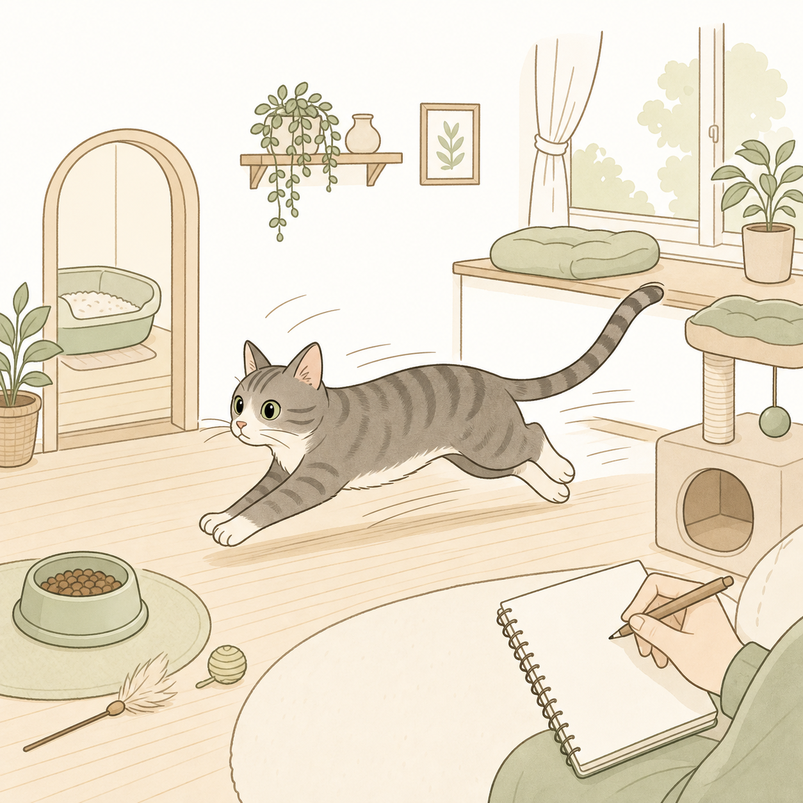
츄르가 갑자기 뛰는 날이면 집 안의 공기가 먼저 달라졌다.
방금 전까지 창가에서 졸던 고양이가 복도 끝으로 튀어나가고, 발바닥 소리가 마룻바닥을 두드렸다.
나는 처음엔 웃었다.
고양이의 우다다는 사람에게 늘 조금 우스운 장면으로 보인다.
하지만 같은 행동이 반복되자 웃음만으로는 부족했다.
갑자기 뛰는 이유는 하나가 아니다.
화장실을 다녀온 뒤 몸이 가벼워졌을 수도 있고, 놀이가 부족했을 수도 있고, 밖에서 들린 작은 소리에 긴장했을 수도 있다.
어떤 날은 몸의 불편함이 행동을 바꿀 수도 있다.
그래서 나는 츄르가 뛴 순간만 보지 않고 전후를 보기 시작했다.
뛰기 전 화장실에 갔는지, 사료를 먹었는지, 꼬리와 귀는 어땠는지, 뛰고 난 뒤 숨은 가쁘지 않은지.
고양이 행동은 짧지만 맥락은 길다.
한 장면을 잘라 귀엽다고만 부르면 놓치는 것이 생긴다.
츄르는 뛰었고, 나는 그 뒤를 따라가지 않았다.
대신 오늘 하루 츄르의 몸과 집 안의 리듬을 다시 떠올렸다.
30초 체크
- 갑자기 뛰기 전 화장실, 식사, 놀이가 있었는가?
- 뛰고 난 뒤 호흡과 활력은 평소와 같은가?
- 최근 소음, 손님, 가구 배치 변화가 있었는가?
- 행동이 갑자기 잦아졌는가?
집사 메모
우다다는 자연스러운 활동일 수 있지만, 갑작스러운 행동 변화가 배변·배뇨 이상, 통증 반응, 식욕 변화와 함께 나타나면 단순한 장난으로 넘기지 않는다.
행동을 기록할 때는 전후 상황을 같이 적는다.
오늘의 한 문장
고양이 행동은 순간보다 전후가 더 많은 말을 한다.
2. 웃긴 장면 뒤에 남은 신호
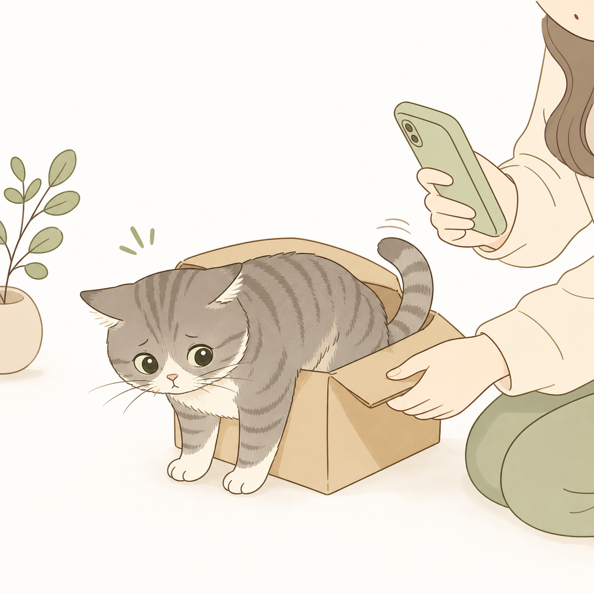
츄르는 작은 상자에 들어가려다 실패했다.
앞발은 안에 있고, 엉덩이는 밖에 남았다.
나는 휴대폰을 들었다.
화면 속 츄르는 너무 웃겼다.
그런데 화면 밖의 츄르는 귀를 뒤로 조금 눕히고 있었다.
그때 알았다.
웃긴 장면과 불편한 장면은 가끔 같은 자세를 하고 있다.
사람은 먼저 웃고, 고양이는 먼저 균형을 잡는다.
나는 휴대폰을 내려놓고 상자를 조금 넓혔다.
츄르는 다시 들어갔다.
이번에는 몸을 낮추지 않았고, 오래 머물렀다.
우리가 고양이를 사랑하는 방식에는 기록하고 싶은 욕심이 섞여 있다.
사진을 찍고, 공유하고, 귀엽다고 말하고 싶다.
하지만 고양이의 몸이 불편하다고 말하는 순간에는 기록보다 조정이 먼저다.
귀여움은 관찰을 멈추는 신호가 아니라 더 정확히 보라는 초대일 수 있다.
30초 체크
- 사진을 찍기 전에 귀, 꼬리, 몸 자세를 보았는가?
- 장면을 연출하려고 고양이를 붙잡지는 않았는가?
- 실패한 물건이나 공간을 더 편하게 바꿀 수 있는가?
- 웃긴 행동이 반복되는 불편 신호는 아닌가?
집사 메모
사진과 영상 기록은 도움이 될 수 있지만, 플래시, 큰 소리, 억지 자세는 피한다.
귀여운 행동도 스트레스, 통증, 불안과 겹칠 수 있으므로 전후 맥락을 함께 본다.
오늘의 한 문장
귀여움은 관찰을 멈추는 이유가 아니다.
3. 집사의 상처받는 속도
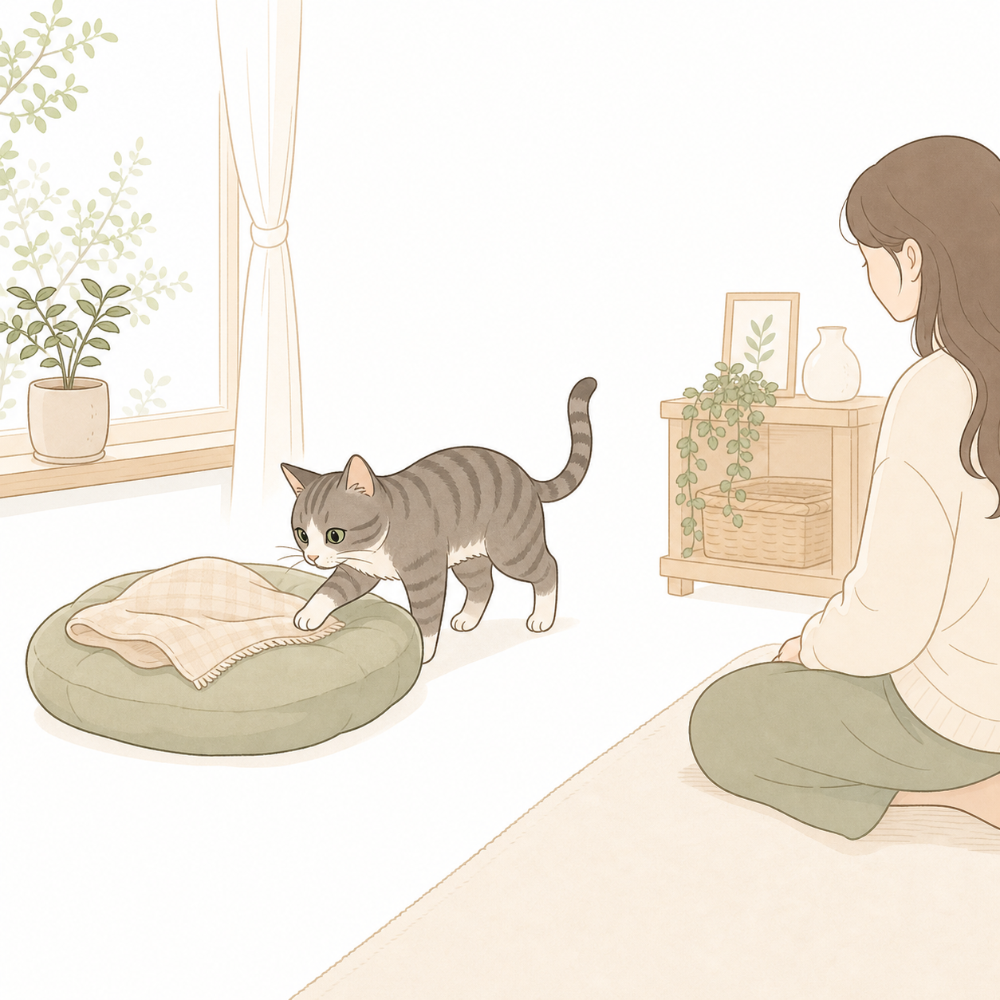
나는 츄르에게 좋은 방석을 사 줬다.
부드러운 천, 낮은 높이, 세탁하기 쉬운 커버. 내 기준으로는 완벽했다.
츄르는 방석 앞에서 냄새를 맡고 돌아섰다.
나는 하루 만에 상처받았다.
고양이가 거절한 것은 마음이 아니라 시간일 수 있다.
새 물건에는 낯선 냄새가 있고, 낯선 촉감이 있고, 집 안의 익숙한 지도를 바꾸는 힘이 있다.
나는 가격표와 리뷰를 봤지만, 츄르는 냄새와 거리와 도망갈 길을 봤다.
방석을 한가운데 두지 않고 창가 구석으로 옮겼다.
츄르가 쓰던 천을 올리고, 며칠 동안 아무 말도 하지 않았다.
사흘째 되는 날 앞발 하나가 올라갔다.
닷새째에는 몸을 말았다.
선물은 실패한 것이 아니라 검수 중이었다.
30초 체크
- 새 물건을 바로 쓰라고 강요하지 않았는가?
- 익숙한 냄새를 함께 제공했는가?
- 고양이가 접근하고 떠날 시간을 주었는가?
- 내 서운함을 고양이의 문제로 바꾸지 않았는가?
집사 메모
새 물건은 천천히 소개한다.
특히 이동장, 방석, 숨숨집은 고양이가 직접 확인할 시간을 줘야 한다.
갑작스러운 회피가 통증이나 다른 불편함과 관련될 수도 있으므로 행동 변화를 함께 살핀다.
오늘의 한 문장
고양이는 선물을 거절하지 않고 시간을 요구한다.
4. 고양이 과시대회의 뒤끝
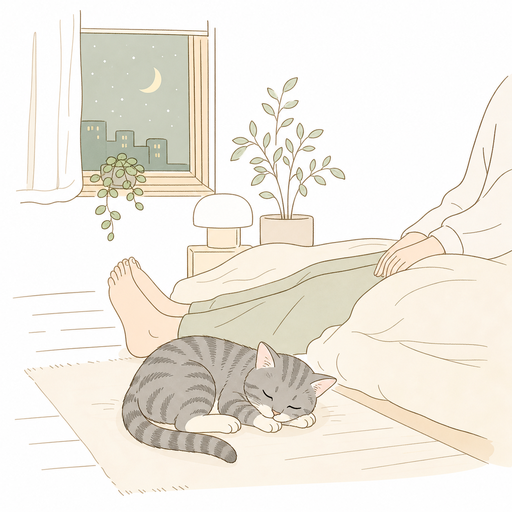
친구는 자기 고양이가 부르면 바로 온다고 했다.
나는 집에 돌아와 츄르를 불렀다.
츄르는 오지 않았다.
대신 같은 방에 남아 꼬리 끝만 한 번 움직였다.
그날 나는 이상하게 졌다는 기분이 들었다.
비교는 사람의 놀이지만 고양이에게는 쓸모가 없다.
어떤 고양이는 부르면 오고, 어떤 고양이는 도망가지 않는 것으로 답한다.
어떤 고양이는 무릎에 올라오고, 어떤 고양이는 같은 방에서 등을 보이며 쉰다.
신뢰는 늘 사진이 되는 자세로 오지 않는다.
밤이 되자 츄르는 내 발치에서 잤다.
손이 닿지 않는 거리였지만, 도망가지 않아도 되는 거리였다.
나는 그 거리를 자랑하지 않기로 했다.
대신 기억하기로 했다.
내 고양이는 내 방식이 아니라 자기 방식으로 가까워지고 있었다.
30초 체크
- 다른 고양이 기준으로 내 고양이를 평가하고 있지 않은가?
- 내 고양이의 편안한 신호를 알고 있는가?
- 무릎냥, 애교, 호출 반응만 친밀함으로 보지 않는가?
- 작은 신뢰를 알아차리는가?
집사 메모
고양이 성격과 친밀 표현은 개체차가 크다.
부르면 오는 행동만으로 애착을 판단하지 않는다.
억지 접촉은 오히려 관계를 늦출 수 있다.
오늘의 한 문장
내 고양이의 속도는 비교 대상이 아니다.
5. 이름을 바꾸면 운명도 바뀔까
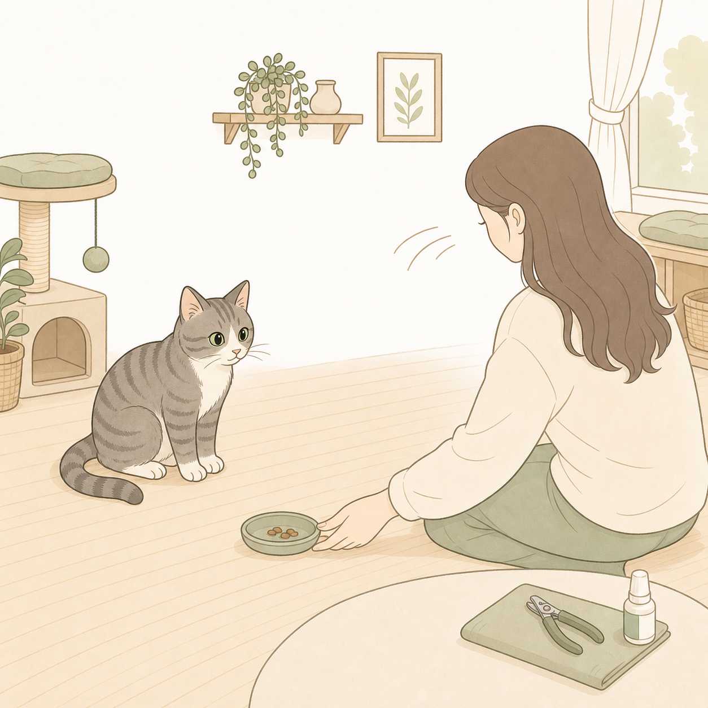
츄르라는 이름은 처음엔 임시였다.
부르기 쉽고, 입에 붙고, 간식처럼 기분이 좋아서 붙인 이름이었다.
그런데 이름은 반복될수록 관계의 표정이 된다.
문제는 내가 이름 뒤에 싫은 일을 많이 붙였다는 점이었다.
발톱을 깎을 때도, 약을 먹일 때도, 사진을 찍으려고 다가갈 때도 나는 이름을 불렀다.
어느 순간 츄르에게 이름은 초대장이 아니라 예고장이 되어 있었다.
나는 이름을 다시 가볍게 만들기로 했다.
이름을 부르고 아무것도 하지 않는 날, 이름을 부르고 간식만 놓고 지나가는 날, 이름을 부르고 눈을 천천히 감았다 뜨는 날. 이름은 조금씩 무서운 소리에서 평범한 소리로 돌아왔다.
30초 체크
- 이름 뒤에 싫은 일이 자주 따라오는가?
- 이름을 부르고 억지로 잡지는 않는가?
- 이름과 좋은 경험을 다시 연결하고 있는가?
- 반응하지 않아도 혼내지 않는가?
집사 메모
이름은 통제 도구가 아니라 예측 가능한 신호가 되어야 한다.
이름을 부른 뒤 불편한 일이 반복되면 회피 반응이 생길 수 있다.
오늘의 한 문장
이름은 부르는 소리만이 아니라 뒤따르는 경험까지 포함한다.
6. 귀여움이 관찰을 가릴 때
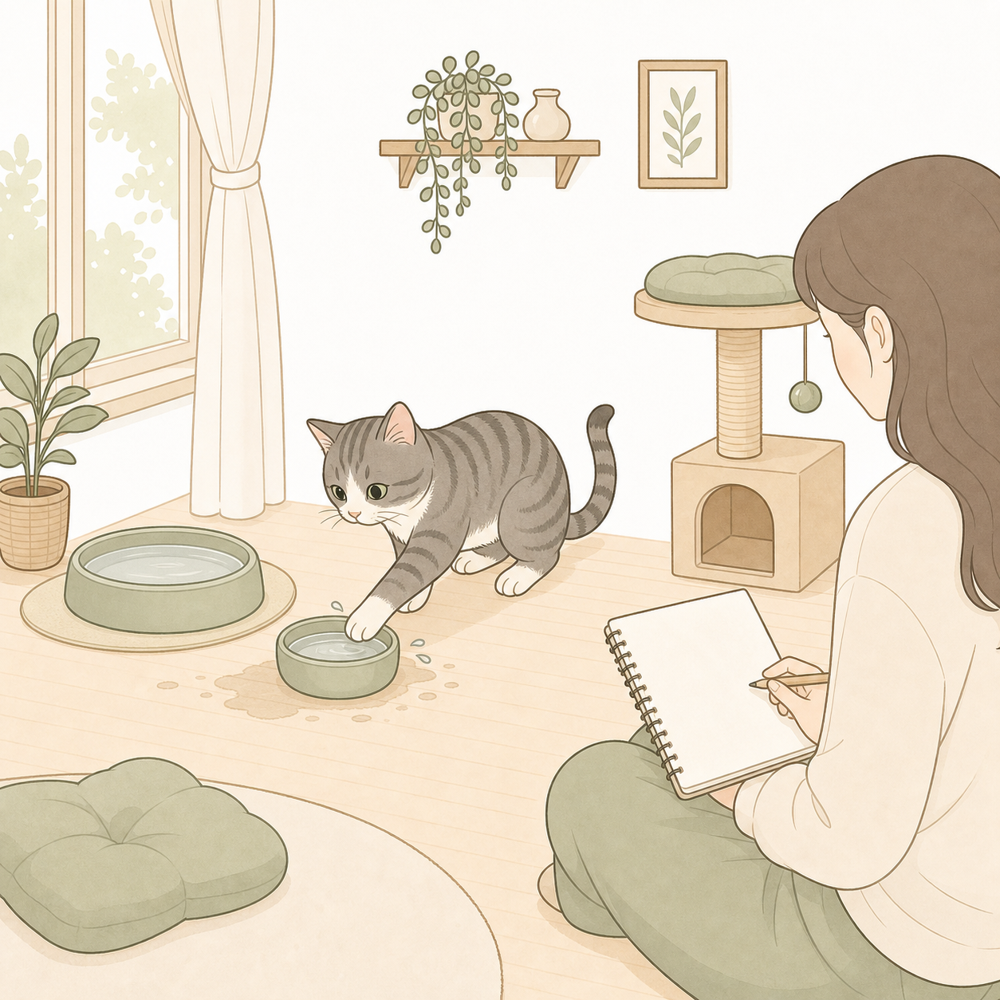
츄르는 물그릇을 앞발로 툭툭 쳤다.
처음에는 귀여웠다.
두 번째도 귀여웠다.
사흘째에는 물그릇 주변이 늘 젖어 있었다.
나는 그제야 귀여움 대신 질문을 붙였다.
그릇이 너무 깊은가. 수염이 닿아 불편한가. 물 위치가 마음에 들지 않는가. 그릇을 낮고 넓은 것으로 바꾸고, 위치도 창가 쪽으로 옮겼다.
츄르는 덜 건드렸다.
고양이는 설명하지 않는다.
대신 반복한다.
반복되는 행동을 귀엽다고만 부르면, 고양이가 어렵게 보내는 신호를 놓칠 수 있다.
귀여움은 애정의 시작일 수 있지만, 돌봄의 끝이어서는 안 된다.
30초 체크
- 반복 행동을 귀엽다고만 넘기고 있지 않은가?
- 그릇, 위치, 소음, 주변 동선을 바꿔 볼 수 있는가?
- 행동이 갑자기 시작되었는가?
- 식욕, 음수량, 배변·배뇨 변화가 함께 있는가?
집사 메모
반복 행동은 환경 불편, 놀이 부족, 스트레스, 건강 문제 등과 관련될 수 있다.
행동 하나만 보고 결론 내리지 말고 전후 변화를 함께 본다.
오늘의 한 문장
귀엽다는 말 뒤에 질문 하나를 더 붙인다.
Part 2. 집 안에 놓는 안심
7. 소파 밑 38센티미터
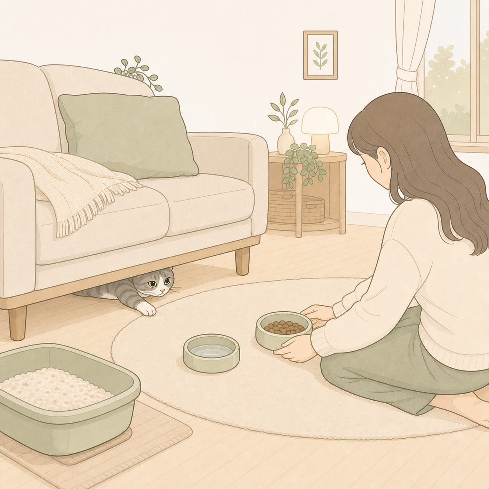
츄르가 처음 고른 방은 방이 아니었다.
소파 밑 38센티미터의 어둠이었다.
나는 이름을 불렀고, 츄르는 더 깊이 들어갔다.
내가 다정하다고 생각한 목소리는 츄르에게 아직 너무 가까운 소리였을지 모른다.
새집은 사람에게 시작이지만 고양이에게는 정보의 폭주다.
낯선 바닥 냄새, 냉장고 소리, 먼지의 방향, 사람 발걸음, 문틈의 바람. 츄르는 그 모든 것을 한 번에 읽어야 했다.
그러니 소파 밑은 도망이 아니라 임시 사무실 같은 곳이었다.
거기서 집을 검토하고 있었다.
나는 손을 넣지 않았다.
대신 구조를 바꿨다.
밥은 입구에서 조금 떨어진 곳에 두고, 물은 더 조용한 곳에 두었다.
화장실은 벽을 등질 수 있는 자리로 옮겼다.
조명은 낮추고, TV는 켜지 않았다.
나오라고 설득하는 대신 나올 수 있는 조건을 만들었다.
밤이 깊어지자 앞발 하나가 나왔다.
나는 보지 않는 척했다.
그 발은 나에게 온 것이 아니라 자기 세계를 넓히러 나온 것이었다.
관계는 그날 시작됐다.
포옹이 아니라 거리에서.
30초 체크
- 고양이가 숨을 수 있는 안전한 공간이 있는가?
- 손을 넣어 끌어내려 하지 않았는가?
- 밥, 물, 화장실이 접근하기 쉬운가?
- 새 환경의 소음과 조명을 줄였는가?
집사 메모
새 환경에서 숨는 행동은 흔하다.
다만 장시간 식욕 부진, 배변·배뇨 이상, 호흡 이상, 심한 무기력이 있으면 상담한다.
숨을 곳을 없애기보다 안전한 숨을 곳을 제공한다.
오늘의 한 문장
나오게 하지 말고, 나올 수 있게 만든다.
8. 밥그릇보다 먼저 놓아야 할 것
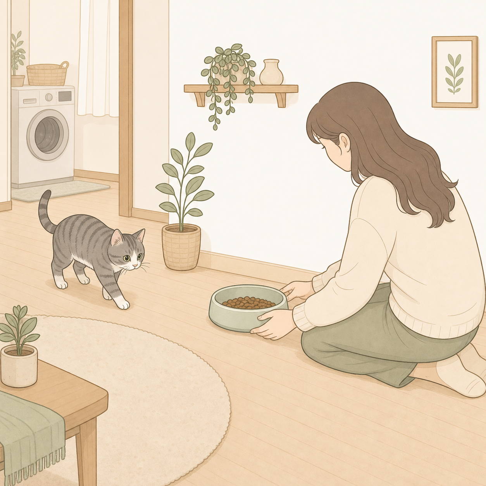
좋은 그릇을 샀다.
낮고 넓고, 미끄러지지 않고, 보기에도 예뻤다.
츄르는 그릇 앞에서 멈췄다.
냄새를 맡고, 고개를 돌렸다.
나는 그릇이 마음에 들지 않는다고 생각했다.
문제는 그릇이 아니라 자리였다.
그릇은 세탁기 옆에 있었다.
사람에게는 생활 소음이지만, 고양이에게는 밥 먹는 자리 밑에서 울리는 불안일 수 있었다.
나는 그릇을 조용한 벽 쪽으로 옮겼다.
등 뒤로 사람이 자주 지나가지 않고, 화장실과도 떨어진 곳이었다.
그날 밤 도자기에 사료 알갱이가 부딪히는 소리가 났다.
고양이의 첫 식사는 축하받는 장면이 아니라 방해받지 않는 장면이어야 했다.
30초 체크
- 밥자리 근처에 큰 소음이나 진동이 있는가?
- 등 뒤로 사람이 자주 지나가는가?
- 화장실과 너무 가깝지는 않은가?
- 갑작스러운 식욕 저하가 있는가?
집사 메모
식욕 변화는 위치나 그릇 문제일 수도 있지만 건강 문제일 수도 있다.
하루 이상 먹지 않거나 활력 저하가 함께 보이면 상담한다.
오늘의 한 문장
좋은 그릇보다 먼저 조용한 자리를 놓는다.
9. 물그릇 세 개의 정치학
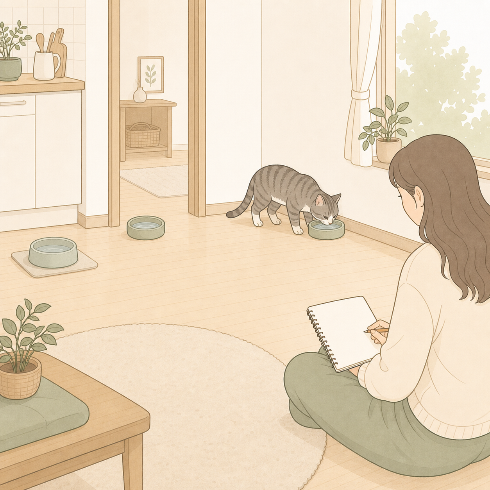
츄르가 물을 적게 마시는 것 같았다.
나는 물그릇을 하나 더 샀고, 그래도 마음이 놓이지 않아 세 개를 두었다.
부엌, 창가, 침실 문 근처. 같은 물이었지만 츄르는 창가 물을 골랐다.
창가에는 이유가 있었다.
밖을 볼 수 있고, 등 뒤가 막혀 있고, 발소리가 갑자기 지나가지 않았다.
물은 물만의 문제가 아니었다.
통로, 시야, 그릇 깊이, 냄새, 소음이 모두 물을 마시는 경험을 만들었다.
사람은 효율을 좋아한다.
밥 옆에 물, 물 옆에 간식, 한곳에 깔끔하게. 고양이는 효율보다 안심을 먼저 마신다.
나는 창가 물그릇을 건드리지 않기로 했다.
30초 체크
- 물그릇이 여러 위치에 있는가?
- 사료, 화장실, 가전 소음과 떨어져 있는가?
- 그릇 높이와 깊이가 편한가?
- 음수량 변화가 갑자기 생겼는가?
집사 메모
물을 적게 마시거나 갑자기 많이 마시는 변화는 기록한다.
소변 양, 식욕, 체중, 활력 변화와 함께 보이면 병원에 상담한다.
오늘의 한 문장
고양이는 물보다 먼저 안심을 마신다.
10. 화장실은 집의 중심이다
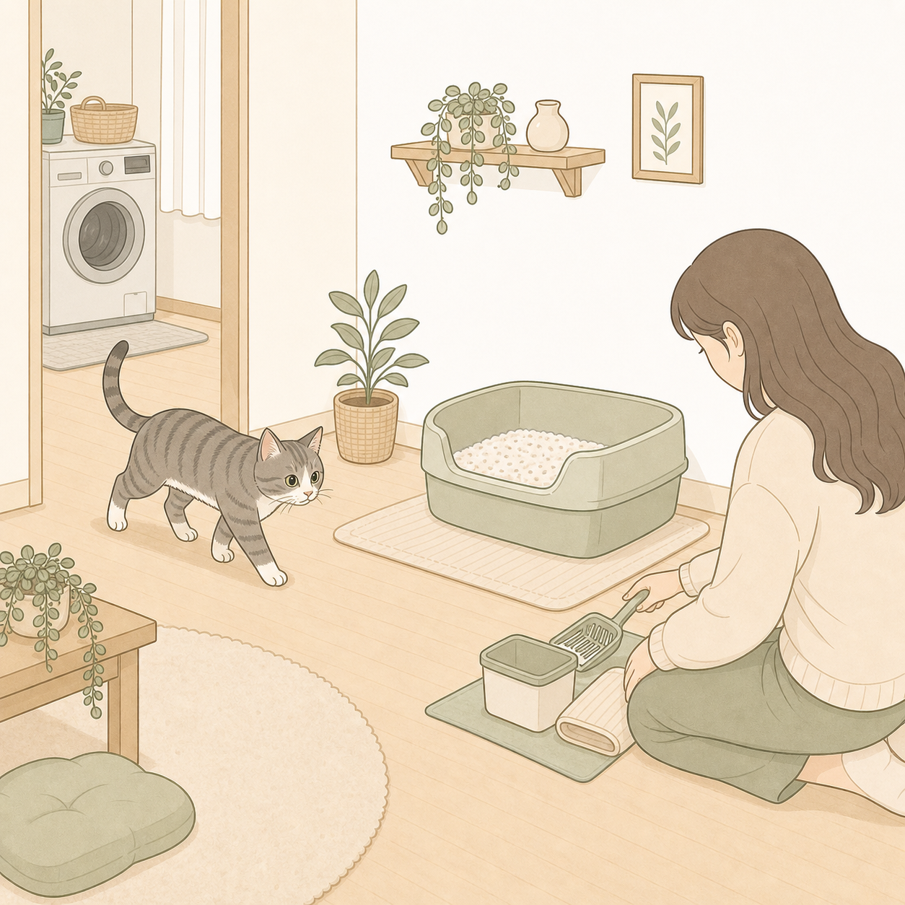
나는 화장실을 숨기고 싶었다.
손님 눈에 덜 띄는 곳, 냄새가 덜 나는 곳, 청소할 때 덜 보이는 곳. 그래서 세탁실 구석에 두었다.
사람 기준으로는 좋은 위치였다.
츄르 기준으로는 아니었다.
츄르는 화장실 앞에서 멈추는 일이 많아졌다.
들어갔다가 바로 나오기도 했다.
처음엔 모래가 마음에 안 드나 생각했다.
하지만 위치를 보니 소리가 많았다.
세탁기, 문, 발걸음. 게다가 안쪽에 들어가면 도망갈 방향이 하나뿐이었다.
화장실은 사람에게 숨기고 싶은 물건이지만, 고양이에게는 몸을 맡기는 자리다.
취약한 자세로 머무는 곳이다.
그래서 조용하고, 접근하기 쉽고, 빠져나갈 길이 있어야 한다.
나는 화장실을 더 열린 곳으로 옮겼다.
대신 주변을 더 자주 청소했다.
숨기는 대신 관리하기로 했다.
위치를 바꾼 뒤 츄르는 더 편하게 들어갔다.
나는 그제야 알았다.
집의 중심은 거실 테이블이나 소파가 아니라, 고양이가 편하게 화장실을 쓸 수 있는 동선일 때도 있다.
30초 체크
- 화장실 입구가 막혀 있지 않은가?
- 주변에 큰 소음이나 진동이 있는가?
- 고양이 수에 맞는 화장실 개수를 갖췄는가?
- 매일 모래 상태를 확인하는가?
집사 메모
화장실 회피는 모래 취향, 위치, 스트레스, 통증, 방광 문제 등 다양한 원인과 관련될 수 있다.
배뇨 곤란, 혈뇨, 반복 출입은 빠른 상담이 필요하다.
오늘의 한 문장
화장실을 숨기기 전에 고양이가 쓰기 편한지 본다.
11. 이동장은 감옥이 아니라 방이어야 한다
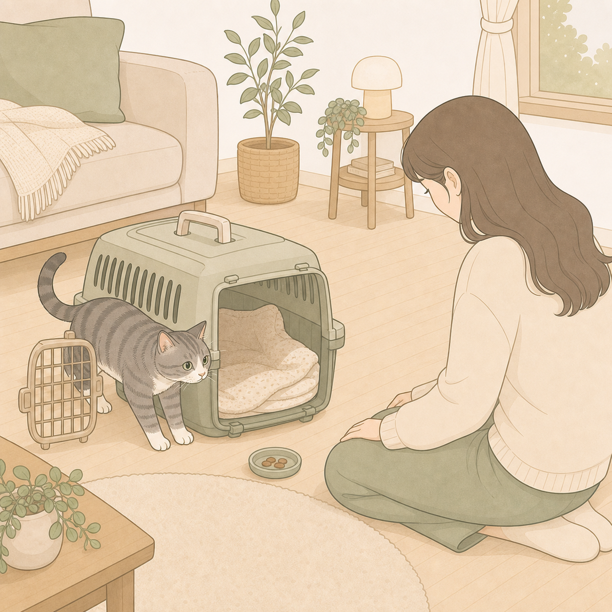
이동장을 꺼내면 츄르는 사라졌다.
병원 가는 날마다 나는 숨바꼭질을 했고, 츄르는 이동장을 더 싫어하게 됐다.
이동장은 외출 준비가 아니라 체포의 예고가 되어 있었다.
나는 이동장을 거실에 계속 두었다.
안에 담요를 깔고, 가끔 간식을 넣었다.
문은 닫지 않았다.
들어가도 아무 일도 일어나지 않는 날이 많아지자 츄르는 조금씩 의심을 내려놓았다.
어느 날은 앞발을 넣었고, 어느 날은 안에서 잠깐 앉았다.
병원 가는 일이 쉬워진 것은 아니었다.
하지만 이동장이 매번 최악의 사건으로만 남지는 않았다.
평소의 방이 되어야 필요한 날에도 덜 무서운 상자가 된다.
30초 체크
- 이동장이 평소에도 열려 있는가?
- 안에서 좋은 경험이 있었는가?
- 병원 당일에만 갑자기 꺼내지 않는가?
- 이동장 안의 냄새와 바닥이 익숙한가?
집사 메모
이동장 적응은 응급 상황의 안전과도 연결된다.
억지로 밀어 넣는 경험이 반복되면 공포가 커질 수 있다.
오늘의 한 문장
이동장은 병원 가는 상자가 아니라 평소부터 존재하는 방이어야 한다.
12. 출근 전 30초
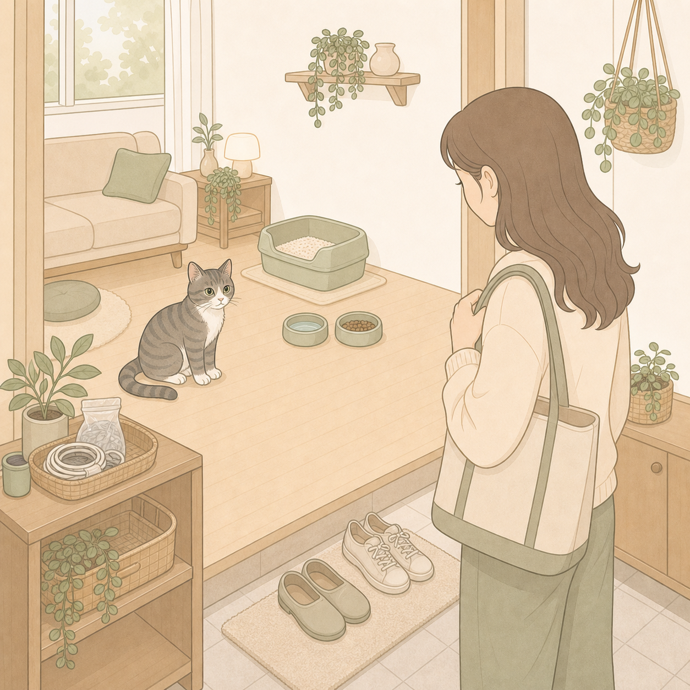
아침은 늘 급했다.
머그컵, 충전기, 가방, 열쇠. 나는 문 앞에서야 츄르를 찾았다.
츄르는 창가에 있었다.
나는 오래 미안해했고, 츄르는 그 긴 감정을 이해하지 못한 얼굴로 나를 봤다.
그 뒤 출근 전 30초를 정했다.
물그릇, 화장실, 창문 잠금, 위험한 끈과 비닐, 츄르의 위치. 확인은 짧고 정확해야 했다.
인사도 길게 하지 않았다.
“다녀올게.” 그게 전부였다.
고양이는 사람의 미안함보다 예측 가능한 하루를 더 잘 이해한다.
퇴근 후에도 나는 바로 안으려 하지 않았다.
가방을 내려놓고, 손을 씻고, 츄르가 올 시간을 두었다.
어떤 날은 바로 오고, 어떤 날은 늦게 왔다.
둘 다 인사였다.
30초 체크
- 출근 전 물과 화장실을 확인했는가?
- 창문과 위험 물건을 봤는가?
- 나갈 때 과한 감정으로 긴장시키지 않는가?
- 퇴근 후 고양이가 먼저 다가올 시간을 주는가?
집사 메모
분리 관련 문제가 반복되면 울음, 파괴, 식욕 변화, 배변 실수 등 구체적 행동을 기록한다.
단순 외로움으로만 해석하지 않는다.
오늘의 한 문장
미안함보다 예측 가능한 하루를 남긴다.
Part 3. 마음의 속도를 맞추는 일
13. 이름을 부르지 않는 인사
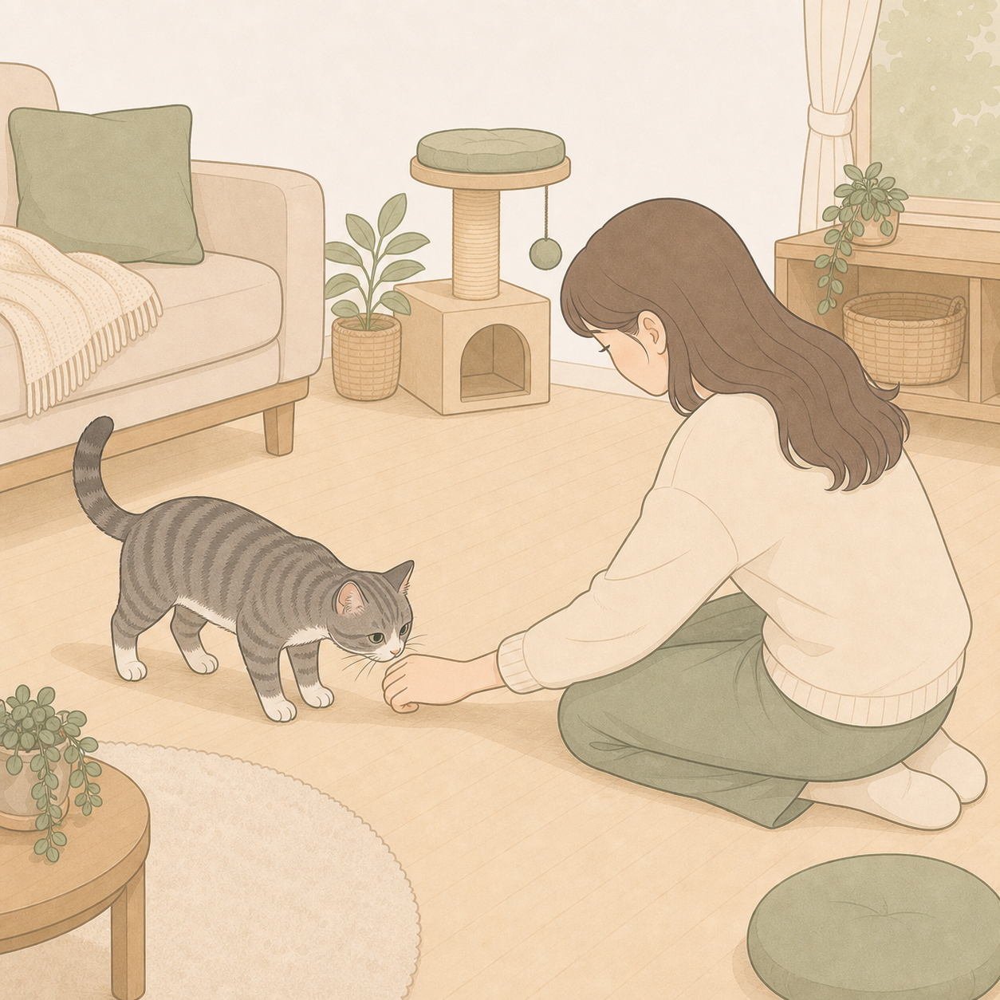
내가 이름을 부르면 츄르는 귀만 움직였다.
몸은 오지 않았다.
나는 더 다정하게 불렀고, 츄르는 다른 방으로 갔다.
이름이 싫은 게 아니라, 이름 뒤에 오는 일이 싫었을지도 모른다.
나는 방식을 바꿨다.
이름을 덜 부르고, 손등을 낮게 내밀었다.
잡겠다는 손바닥이 아니라 냄새 맡을 수 있는 손등. 첫날 츄르는 오지 않았다.
둘째 날도 오지 않았다.
사흘째 되는 날 수염이 스쳤다.
인사는 내가 시작하는 소리라고 생각했다.
츄르는 인사가 자기가 정하는 거리라는 것을 알려 줬다.
그 뒤로 나는 고양이가 먼저 닿는 순간을 기다리는 법을 배웠다.
30초 체크
- 이름 뒤에 싫은 일이 따라오지는 않는가?
- 손을 위에서 내려오게 하지 않는가?
- 고양이가 먼저 다가올 시간을 주는가?
- 반응이 없어도 반복해서 부르지 않는가?
집사 메모
친밀함은 반복되는 좋은 예측으로 만들어진다.
이름을 부르고 억지로 잡는 습관은 피한다.
오늘의 한 문장
인사는 소리보다 거리를 먼저 배운다.
14. 하악질의 번역
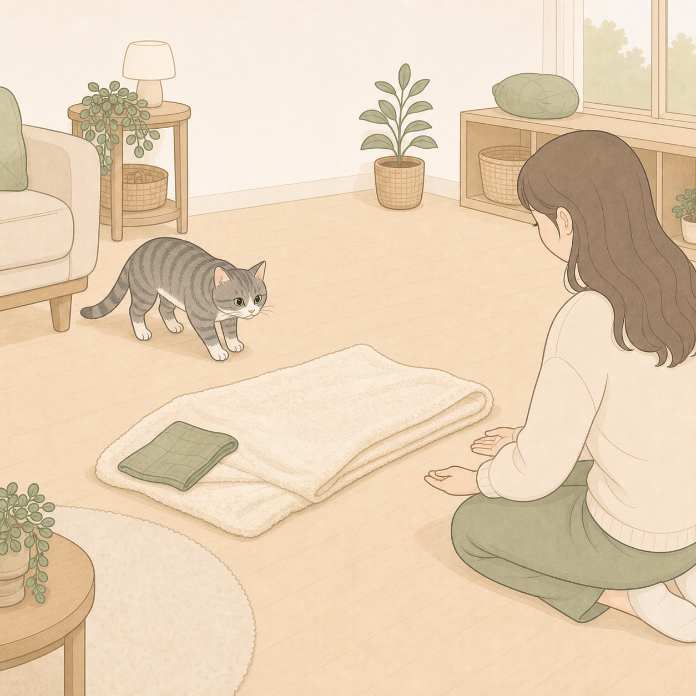
새 담요는 부드러웠다.
색도 좋았다.
나는 펼치는 순간부터 츄르가 좋아할 거라고 생각했다.
거실 한가운데 담요를 놓고, 손으로 몇 번 눌러 보이며 말했다.
“봐, 좋지?” 츄르는 담요를 보았다.
그리고 몸을 낮췄다.
내가 한 걸음 다가가자 공기가 짧게 갈라졌다.
하악. 큰 소리는 아니었다.
하지만 그 소리 하나로 방 안의 거리가 달라졌다.
나는 멈췄다.
처음 느낀 것은 당황이었다.
그다음은 서운함이었다.
좋은 걸 사 줬는데 왜 저럴까.
그 생각이 문제였다.
좋은 것은 내 기준이었다.
츄르에게 담요는 갑자기 집 한가운데 들어온 낯선 냄새였고, 피할 길을 좁히는 큰 물건이었다.
사람은 선물이라고 부르지만, 고양이는 침입이라고 느낄 수 있다.
하악질은 나를 미워한다는 말이 아니었다.
지금 이 거리와 속도가 어렵다는 말이었다.
나는 담요를 치웠다.
버린 것이 아니라 구석으로 옮겼다.
그 위에 츄르가 쓰던 작은 천을 올렸다.
그리고 더 이상 설명하지 않았다.
고양이에게 설명은 냄새와 시간보다 설득력이 약하다.
하루 동안 츄르는 담요를 보지 않는 척했다.
이틀째에는 지나가다 멈췄다.
사흘째에는 끝을 밟았다.
일주일 뒤에는 그 위에서 잤다.
하악질은 관계의 실패가 아니었다.
오히려 관계를 지키는 마지막 안내에 가까웠다.
더 오면 힘들다.
더 빠르면 무섭다.
다시 시작하려면 멀리서 시작해 달라. 그 말을 들을 줄 아는 사람이 되면, 고양이는 더 자주 말해도 된다고 느낀다.
30초 체크
- 하악질 뒤에 더 다가가지 않았는가?
- 새 물건이나 새 사람을 천천히 소개했는가?
- 고양이가 피할 길과 숨을 곳을 남겨 두었는가?
- “성격이 나쁘다”보다 “무엇이 어려웠을까”를 먼저 생각했는가?
집사 메모
하악질은 불편함과 거리 요청의 신호일 수 있다.
반복되거나 공격 행동으로 이어지면 환경 변화, 통증, 스트레스 요인을 함께 살핀다.
갑자기 성격이 바뀐 것처럼 보일 때는 몸의 불편함이 원인일 수도 있으므로 관찰과 상담이 필요하다.
오늘의 한 문장
하악질은 나쁜 성격이 아니라 더 멀리서 다시 시작하라는 번역이다.
15. 우다다는 혼난 뒤가 아니라 비운 뒤에 온다
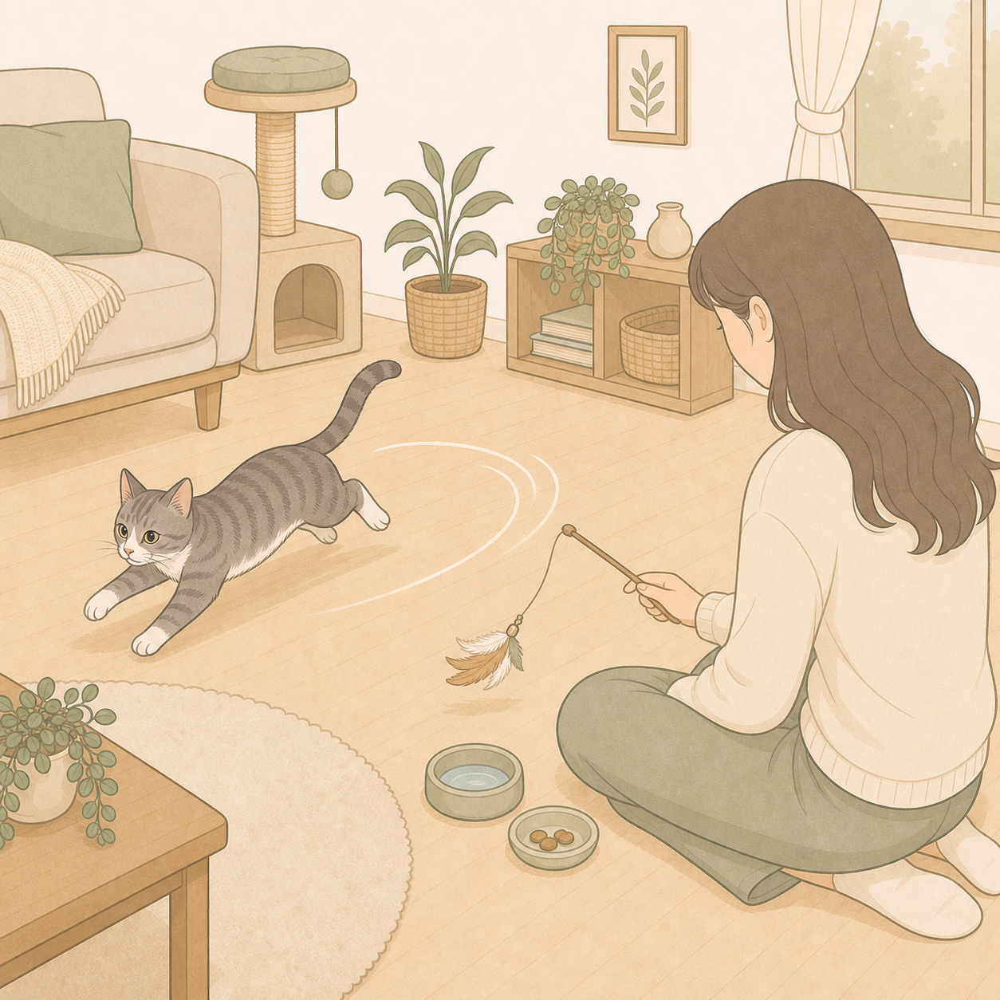
밤 열한 시가 되면 츄르는 다른 고양이가 되었다.
낮에는 햇빛 속에서 길게 누워 있다가, 밤이 되면 복도 끝에서 거실까지 뛰었다.
방향을 바꾸는 소리, 캣타워에 오르는 소리, 다시 내려오는 소리. 나는 처음엔 웃었고, 다음엔 피곤했고, 그다음엔 화가 났다.
“그만.”
말은 늦었다.
츄르는 이미 다음 코너를 돌고 있었다.
나는 츄르가 말을 안 듣는다고 생각했다.
그런데 낮에 장난감을 보니 너무 깨끗했다.
깃털은 멀쩡했고, 공은 구석에 그대로 있었다.
나는 놀아 줬다고 생각했지만, 츄르는 사냥한 적이 없었다.
막대를 몇 번 흔든 것은 놀이가 아니라 사람의 의무감에 가까웠다.
그날부터 밤 우다다 전에 작은 사냥 시간을 만들었다.
숨어 기다리게 하고, 천천히 움직이고, 실패하게 하고, 다시 기회를 주고, 마지막에는 잡게 했다.
끝에는 아주 작은 간식을 주었다.
츄르는 그날도 뛰었다.
하지만 짧게 뛰고 물을 마신 뒤 누웠다.
모든 우다다가 놀이 부족 때문은 아니다.
통증, 배뇨 문제, 스트레스, 환경 변화도 행동을 바꿀 수 있다.
하지만 적어도 나는 혼내기 전에 물어야 했다.
오늘 이 몸에 남은 에너지는 어디로 가야 했을까.
30초 체크
- 하루에 고양이가 직접 잡는 놀이가 있었는가?
- 우다다 전후 식사, 배변, 배뇨는 정상인가?
- 갑작스러운 과활동이나 통증 반응이 있는가?
- 놀이가 매번 같은 방식으로 너무 빨리 끝나지는 않는가?
집사 메모
밤 활동은 고양이의 자연스러운 리듬과 관련될 수 있다.
다만 갑작스러운 행동 변화, 배뇨 이상, 통증 반응, 식욕 변화가 함께 있으면 단순 에너지로 넘기지 않는다.
오늘의 한 문장
뛰는 고양이를 멈추기 전에 무엇이 남아 있었는지 본다.
16. 꼬리가 먼저 말한 날
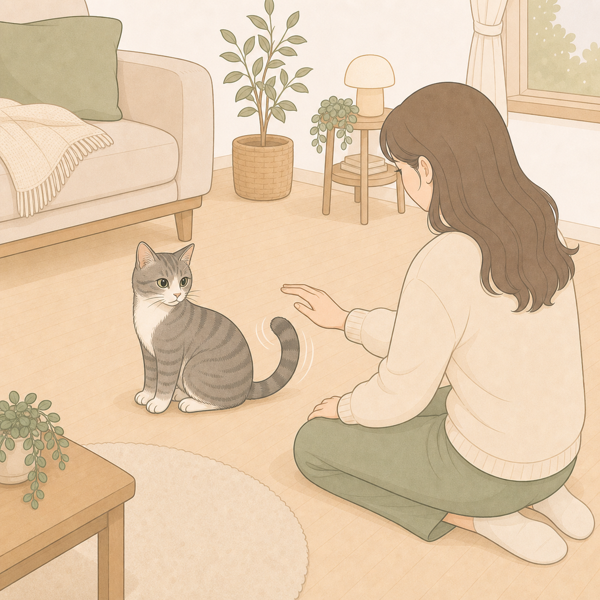
츄르가 내 옆에 앉았다.
나는 조심스럽게 등을 쓰다듬었다.
처음에는 괜찮았다.
몸은 낮아지지 않았고, 귀도 그대로였다.
그래서 나는 조금 더 쓰다듬었다.
그때 꼬리가 움직이기 시작했다.
처음에는 천천히, 그다음에는 더 빠르게. 나는 그걸 늦게 읽었다.
손을 멈추지 않았고, 츄르는 내 손을 피했다.
물지는 않았다.
하지만 분명히 거리를 만들었다.
내가 놓친 것은 거절이 아니라 거절 전의 문장이었다.
사람은 손의 의도를 믿는다.
사랑해서 만지는 거니까 괜찮다고 생각한다.
고양이는 의도보다 몸의 감각을 믿는다.
좋다가도 너무 길면 싫어질 수 있고, 같은 손이라도 오늘은 불편할 수 있다.
친한 사이일수록 멈추는 신호를 더 잘 읽어야 한다.
그 뒤로 나는 쓰다듬기 전에 시간을 짧게 잡았다.
한 번 만지고 멈춘다.
츄르가 다시 다가오면 이어 간다.
떠나면 끝낸다.
만지는 일은 내가 주는 애정이지만, 끝내는 일은 츄르가 지키는 경계다.
30초 체크
- 쓰다듬는 중 꼬리 속도가 빨라지는가?
- 귀가 뒤로 눕거나 몸이 손에서 멀어지는가?
- 고양이가 떠날 때 붙잡지 않는가?
- 짧게 만지고 반응을 기다리는가?
집사 메모
과자극은 피하기, 물기, 공격 행동으로 이어질 수 있다.
고양이가 먼저 다가오고 먼저 떠날 수 있는 구조를 만든다.
갑자기 접촉을 싫어하면 통증 가능성도 살핀다.
오늘의 한 문장
만지는 손보다 멈추는 손이 더 다정할 때가 있다.
17. 고양이가 나를 좋아한다는 증거
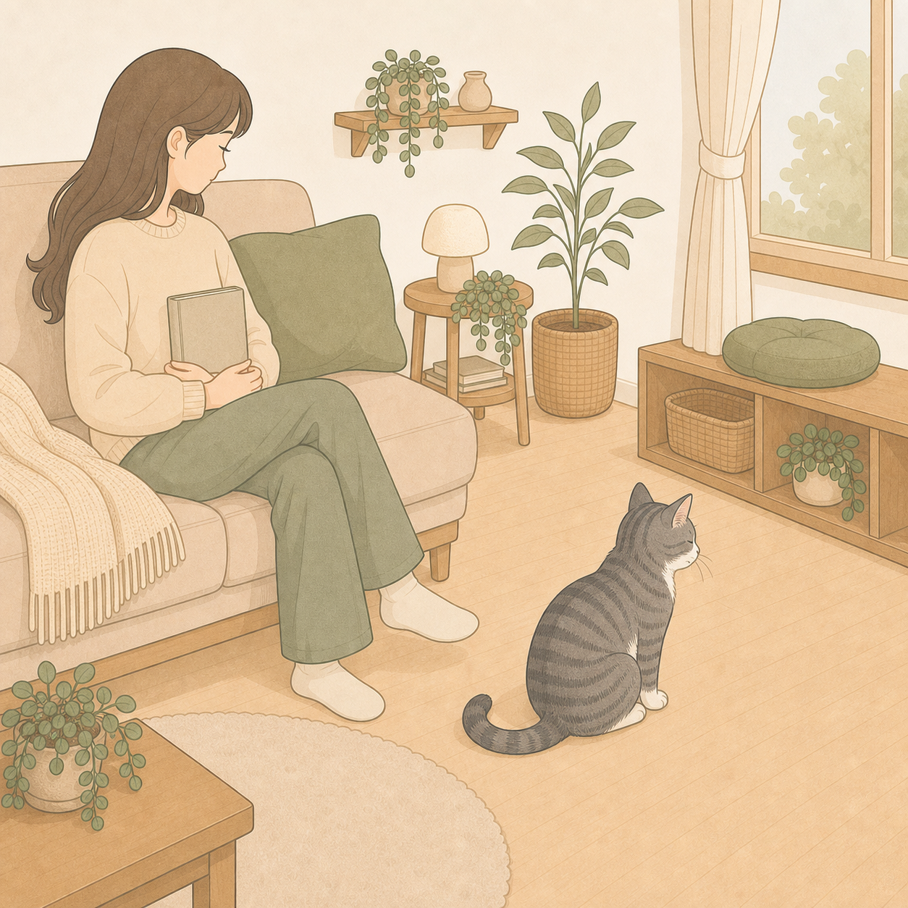
츄르는 무릎에 올라오지 않았다.
나는 한동안 그것을 서운해했다.
하지만 츄르는 내가 책을 읽으면 같은 방에 있었다.
등을 보이고 앉았고, 가끔 눈을 천천히 감았다 떴다.
고양이의 신뢰는 반드시 사람 품으로 오지 않는다.
같은 공간에 남는 것도, 등을 보이는 것도, 눈을 천천히 감는 것도 작은 허락일 수 있다.
문제는 사람이 그 조용한 표현을 자주 못 알아본다는 점이다.
어느 날 츄르는 내 발치에서 잤다.
손이 닿지 않는 거리였지만 도망가지 않아도 되는 거리였다.
그날 나는 무릎보다 중요한 거리가 있다는 걸 배웠다.
30초 체크
- 내 고양이만의 편안한 신호를 알고 있는가?
- 무릎냥 기준으로 친밀함을 재고 있지 않은가?
- 같은 공간에 머무는 신뢰를 알아차리는가?
- 고양이가 떠날 때 붙잡지 않는가?
집사 메모
친밀 표현은 고양이마다 다르다.
억지 접촉보다 안정된 반복 경험이 관계를 만든다.
오늘의 한 문장
고양이의 사랑은 조용해서 더 자주 놓친다.
18. 잠깐 싫어할 권리
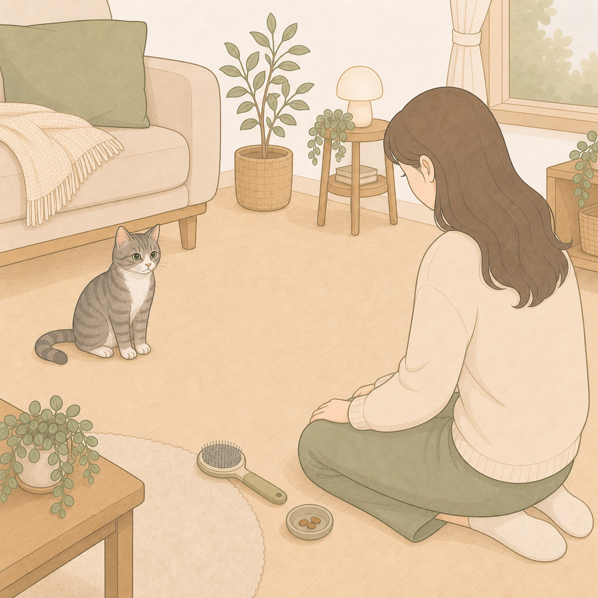
츄르는 빗을 싫어했다.
나는 털 관리를 해야 한다는 이유로 빗질을 밀어붙였다.
필요한 일이니까 참아야 한다고 생각했다.
츄르는 빗만 보면 사라졌다.
필요한 일도 무섭게 오면 더 어려워진다.
나는 빗질을 하지 않는 날을 만들었다.
빗을 바닥에 두고 간식만 줬다.
다음 날은 한 번 빗고 멈췄다.
그다음은 두 번. 싫어할 권리를 주자, 견딜 수 있는 시간이 조금 생겼다.
돌봄은 필요하다는 말로 끝나지 않는다.
고양이가 덜 무섭게 받아들일 수 있도록 과정을 나누는 일까지 돌봄이다.
30초 체크
- 필요한 관리라는 이유로 신호를 무시하지 않는가?
- 한 번에 끝내려고 하지 않는가?
- 싫어하는 도구를 좋은 경험과 다시 연결하는가?
- 갑자기 거부가 심해졌다면 몸 상태를 확인했는가?
집사 메모
빗질 거부는 털 엉킴, 피부 문제, 통증과 관련될 수도 있다.
갑작스러운 변화는 관찰하고 필요하면 상담한다.
오늘의 한 문장
돌봄은 싫어할 권리를 지우는 일이 아니다.
Part 4. 몸이 보내는 작은 알림
19. 똥을 보고 쓰는 일기
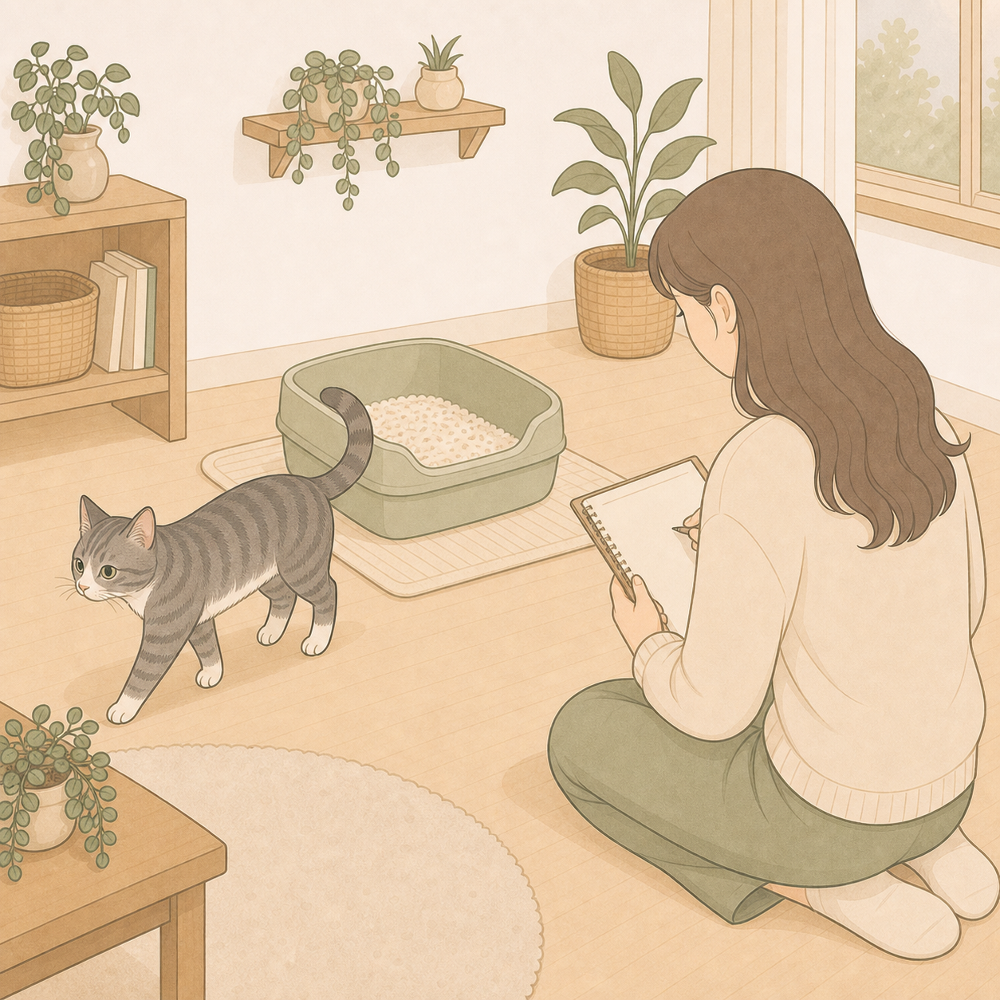
츄르가 화장실에서 나오는 소리는 늘 조금 달랐다.
어떤 날은 모래를 오래 덮었고, 어떤 날은 두 번만 긁고 나왔다.
어떤 날은 아무 일도 없었다는 듯 창가로 갔고, 어떤 날은 거실 끝까지 뛰었다.
사람에게 화장실은 치워야 할 곳이지만, 고양이에게는 몸이 매일 남기는 보고서였다.
처음에는 나도 웃기만 했다.
특히 화장실을 다녀온 뒤 갑자기 달리는 날에는 “시원했어?” 하고 말했다.
츄르는 대답하지 않았다.
대신 캣타워 2층에 앉아 꼬리 끝을 짧게 흔들었다.
웃긴 장면은 웃긴 장면이었다.
하지만 어느 날 모래 위를 보다가, 웃음 뒤에 확인할 것이 있다는 걸 알았다.
그날 변은 평소보다 조금 작고 단단했다.
색은 크게 다르지 않았지만, 모양이 어제와 달랐다.
나는 대수롭지 않게 넘기려다 작은 노트를 꺼냈다.
월요일, 평소보다 단단함. 물그릇 위치 바꿈. 화요일, 양 보통. 수요일, 냄새 조금 강함. 이렇게 적고 보니 걱정이 줄었다.
걱정이 사라진 것이 아니라 쓸모 있는 방향을 얻었다.
기록을 하기 전의 나는 늘 같은 말을 했다.
“뭔가 이상한 것 같아요.” 병원에 가도 이 말은 별 도움이 되지 않았다.
언제부터인지, 얼마나 달라졌는지, 식욕과 물 마시는 양은 어땠는지 말하지 못했기 때문이다.
기록을 시작한 뒤에는 문장이 바뀌었다.
“사흘째 변이 작고 단단해졌고, 물은 평소보다 덜 줄었습니다.” 그 말은 내 불안을 줄이고, 츄르에게 필요한 판단을 더 정확히 만들었다.
화장실을 확인하는 일은 집사의 체면과는 거리가 멀다.
하지만 고양이와 오래 살려면 체면보다 반복이 중요하다.
매일 같은 시간에 모래를 보고, 평소와 다른 것을 기억하고, 이상 신호가 반복되면 미루지 않는 일. 그 작은 반복이 고양이 몸의 변화를 가장 먼저 알려 준다.
30초 체크
- 오늘 배변과 배뇨 횟수를 알고 있는가?
- 크기, 색, 단단함, 냄새가 평소와 다른가?
- 화장실을 오래 들락거리거나 힘들어하는 모습이 있었는가?
- 식욕, 물, 활력 변화가 함께 나타났는가?
집사 메모
배변과 배뇨 변화는 중요한 건강 신호다.
특히 소변을 못 보거나 화장실을 반복해서 들락거리는 경우, 혈뇨가 보이는 경우, 심한 설사나 구토와 무기력이 함께 보이는 경우에는 빠르게 병원에 상담해야 한다.
기록할 때는 날짜, 시간, 횟수, 모양, 색, 식욕, 물 마시는 양을 간단히 적는다.
사진이 도움이 될 때도 있지만, 불필요하게 오래 관찰하며 고양이를 불편하게 만들 필요는 없다.
오늘의 한 문장
화장실은 더러운 곳이 아니라 매일 도착하는 건강 편지다.
20. 발톱깎이는 가위가 아니라 약속
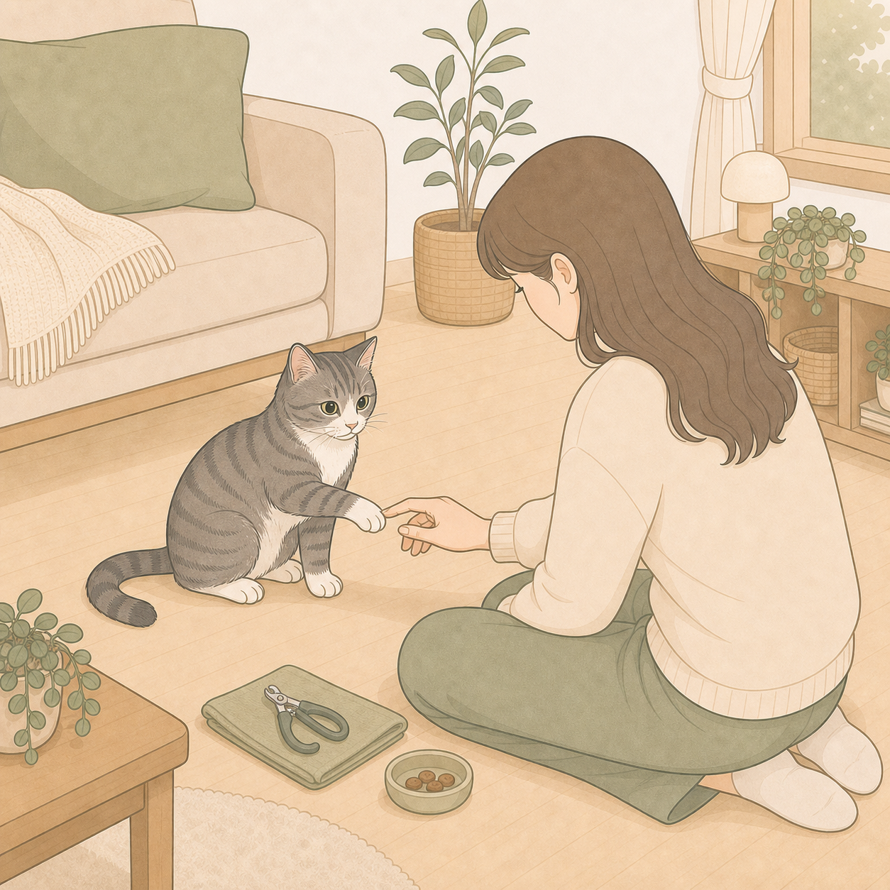
첫 발톱깎이 날, 나는 준비가 완벽하다고 생각했다.
전용 발톱깎이, 간식, 밝은 조명. 츄르는 준비되어 있지 않았다.
앞발을 잡는 순간 몸이 굳었고, 다음 순간 빠져나갔다.
나는 계획을 바꿨다.
첫날은 발 근처에 손만 갔다.
둘째 날은 발등을 1초 만졌다.
셋째 날은 발가락 하나를 살짝 눌렀다.
일주일 뒤 발톱 하나를 깎았다.
하나. 예전 같으면 실패라고 했을 숫자다.
하지만 츄르는 도망가지 않았다.
다음 발톱을 망치지 않았으니 성공이었다.
발톱깎이는 도구가 아니라 다음에도 해볼 수 있다는 약속이었다.
30초 체크
- 한 번에 전부 끝내려 하지 않는가?
- 발 만지는 연습과 실제 자르기를 분리했는가?
- 싫어하는 신호에서 멈추는가?
- 깊게 자르지 않도록 위치를 확인하는가?
집사 메모
발톱을 너무 깊게 자르면 통증과 출혈이 생길 수 있다.
불안이 심하거나 공격성이 커지면 병원이나 전문가 도움을 받는다.
오늘의 한 문장
오늘 하나만 성공해도 다음을 지켰다면 충분하다.
21. 병원에 가져갈 세 줄
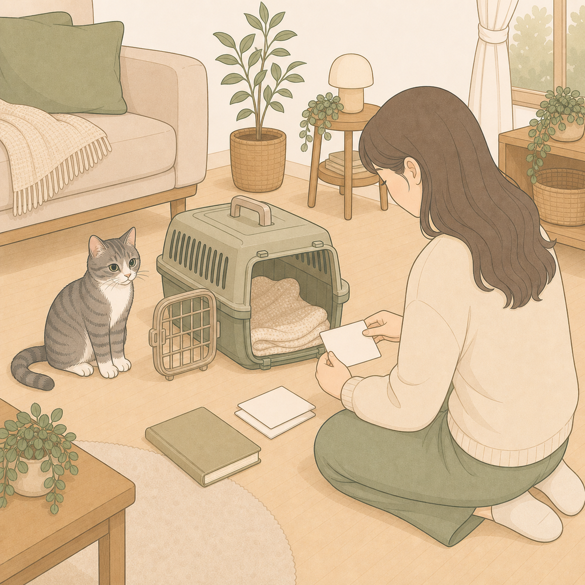
병원에 가는 날이면 나는 늘 말이 많아졌다.
이동장을 꺼내는 순간부터 미안하다는 말을 반복했고, 차 안에서는 괜찮을 거라고 말했다.
정작 진료실에 들어가면 가장 필요한 말은 잘 나오지 않았다.
언제부터였는지, 얼마나 달라졌는지, 평소와 무엇이 달랐는지. 걱정은 컸지만 정보는 흐렸다.
츄르는 이동장 안에서 낮은 자세로 앉아 있었다.
나는 그 자세를 보며 더 불안해졌다.
수의사 선생님이 물었다.
“식욕은 어땠나요?” 나는 “조금 줄었어요”라고 말했다.
“언제부터요?” 그때부터 머릿속이 비었다.
그제였나, 어제였나. 아침이었나, 저녁이었나. 불안은 기억을 선명하게 만들 것 같지만, 실제로는 자주 흐리게 만든다.
그 뒤로 병원에 가기 전 세 줄을 쓰기 시작했다.
첫째, 언제부터 달라졌는지. 둘째, 무엇이 얼마나 달라졌는지. 셋째, 먹고 싸고 마시고 움직이는 기본 리듬이 어떤지. 세 줄은 길지 않았다.
하지만 진료실에서 내 말을 붙잡아 주었다.
예를 들면 이렇게 썼다.
“그제 저녁부터 사료를 절반 정도 남김. 어제부터 화장실에 평소보다 두 번 더 감. 물그릇은 평소보다 빨리 줄었고, 놀이 반응은 짧아짐.” 이 정도만 적어도 “이상한 것 같아요”보다 훨씬 낫다.
보호자가 병명을 맞힐 필요는 없다.
오히려 너무 빨리 결론을 내리면 관찰이 좁아질 수 있다.
보호자의 역할은 진단이 아니라 변화를 정확히 가져가는 일이다.
세 줄을 쓰면 마음도 조금 달라진다.
걱정이 사라지지는 않는다.
하지만 걱정이 할 일을 갖는다.
이동장을 들고 병원에 가는 길에도 내가 츄르를 위해 이미 한 가지를 했다는 느낌이 든다.
봤고, 적었고, 전달할 준비를 했다.
30초 체크
- 변화가 시작된 날짜와 시간을 적었는가?
- 식욕, 물, 배변, 배뇨, 활력을 따로 보았는가?
- 사진이나 짧은 영상이 진료에 도움이 될 수 있는가?
- 내가 추측한 병명보다 실제 변화를 먼저 말할 준비가 되었는가?
집사 메모
병원 상담 전 기록은 진단을 대신하지 않는다.
다만 수의사가 상황을 판단하는 데 도움을 준다.
호흡 이상, 배뇨 불가, 심한 무기력, 반복 구토, 경련처럼 응급 가능성이 있는 상황은 기록을 정리하느라 시간을 보내기보다 내원이 우선이다.
오늘의 한 문장
좋은 집사는 병명을 맞히는 사람이 아니라 변화를 정확히 가져가는 사람이다.
22. 물을 많이 마신 날
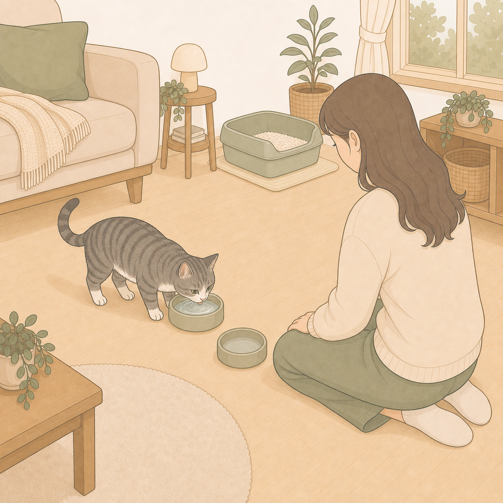
물그릇은 조용히 비었다.
처음에는 좋은 일이라고 생각했다.
물을 잘 마시는 건 좋은 거니까. 그런데 이틀째에도 물그릇이 평소보다 빨리 줄었다.
츄르는 화장실에도 더 자주 갔다.
좋은 일이라는 생각이 조금씩 질문으로 바뀌었다.
나는 물그릇 옆에 작은 표시를 했다.
아침에 어느 높이였는지, 밤에는 얼마나 줄었는지. 정확한 계량컵은 아니었지만, 어제와 오늘을 비교할 정도는 되었다.
화장실 모래도 같이 봤다.
감자가 커졌는지, 횟수가 늘었는지, 냄새가 달라졌는지.
많이 마시는 것은 단순히 건강한 습관일 수도 있다.
날씨, 사료 종류, 활동량에 따라 달라질 수 있다.
하지만 갑자기 달라진 변화는 몸이 보내는 신호일 수도 있다.
집사가 해야 할 일은 물을 많이 마신다는 사실 하나에 결론을 붙이는 것이 아니라, 그 변화가 다른 변화와 함께 오는지 보는 것이다.
그날 나는 츄르에게 더 말을 걸지 않았다.
대신 물그릇을 씻고, 기록을 남기고, 다음 날도 확인했다.
걱정은 몸을 굳게 만들지만, 기록은 손을 움직이게 한다.
30초 체크
- 물 마시는 양이 갑자기 늘었는가?
- 소변 양이나 횟수도 같이 늘었는가?
- 식욕, 체중, 활력 변화가 함께 있는가?
- 사료 종류나 날씨, 실내 온도가 달라졌는가?
집사 메모
음수량과 배뇨 변화는 여러 건강 문제와 관련될 수 있다.
특히 변화가 며칠 이상 이어지거나 체중, 식욕, 활력 변화가 함께 나타나면 기록을 들고 병원에 상담한다.
물을 못 마시게 제한하지 않는다.
오늘의 한 문장
물그릇의 변화도 몸의 문장이다.
23. 토한 뒤에 해야 할 일
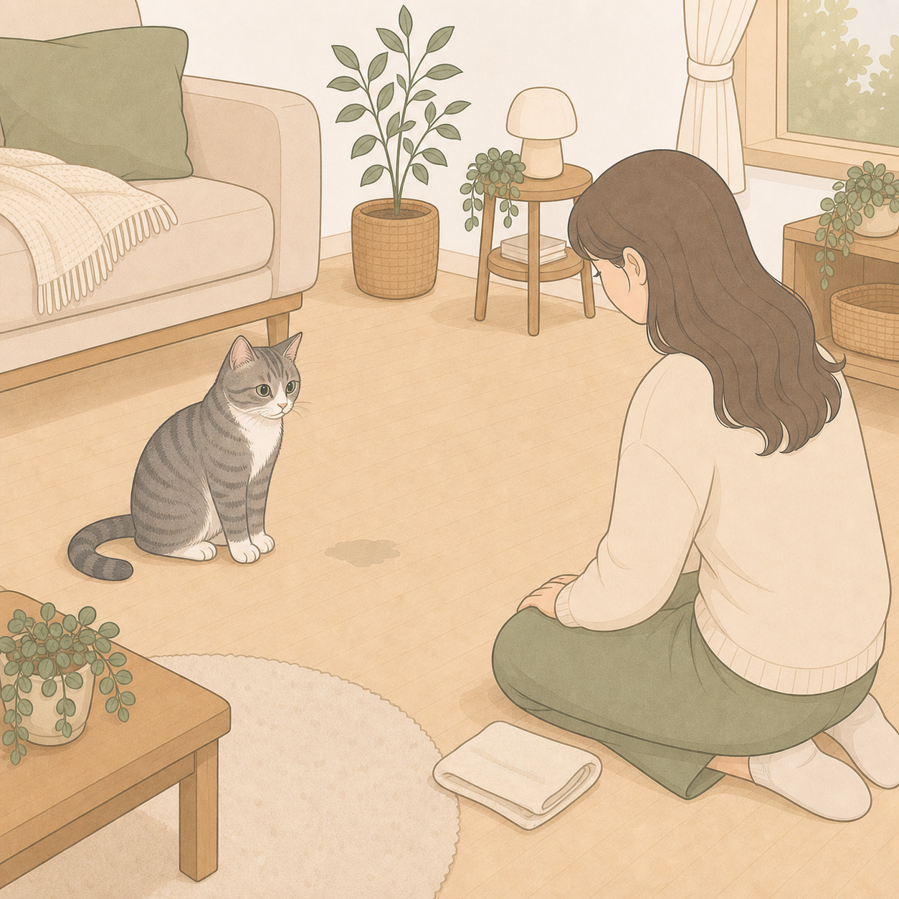
츄르가 처음 토한 날, 나는 소리부터 들었다.
작고 낮은 기침 같은 소리, 몸을 낮추는 자세, 그리고 바닥에 남은 젖은 흔적. 머릿속에는 바로 무서운 단어들이 떠올랐다.
검색창은 그런 마음을 잘 안다.
몇 글자만 쳐도 겁나는 말들이 줄을 선다.
나는 검색을 하려다 멈췄다.
먼저 츄르를 봐야 했다.
츄르는 토한 자리에서 두 걸음 물러나 앉아 있었다.
눈은 평소보다 조금 커졌지만, 숨이 가쁘지는 않았다.
다시 움직였고, 물그릇 쪽으로 가지는 않았다.
그다음 바닥을 보았다.
양은 어느 정도인지, 색은 어떤지, 사료가 그대로 보이는지, 털이 섞였는지, 피처럼 보이는 것은 없는지.
토한 뒤 해야 할 일은 겁먹지 않는 척하는 것이 아니었다.
겁을 관찰로 바꾸는 일이었다.
나는 시간을 적었다.
오전 8시 20분. 아침 사료 후 15분. 한 번. 이후 활력 보통. 그리고 이후 몇 시간 동안 식욕과 움직임을 봤다.
고양이가 한 번 토했다고 모든 일이 응급은 아니다.
하지만 반복 구토, 피, 무기력, 식욕 부진, 이물 섭취 의심은 다르다.
괜찮겠지와 큰일이야 사이에서 집사가 해야 할 일은 결론을 빨리 내는 게 아니라 위험 신호를 놓치지 않는 것이다.
그날 츄르는 오후에 조금 먹었고, 밤에는 평소처럼 창가에 앉았다.
나는 안심했지만 기록은 지우지 않았다.
다음에 같은 일이 생겼을 때 비교할 첫 줄이 생겼기 때문이다.
30초 체크
- 몇 번 토했는가?
- 토한 뒤 식욕, 활력, 호흡은 어떤가?
- 피, 이물, 반복 구토, 심한 무기력이 있는가?
- 최근 사료, 간식, 장난감, 식물 접근이 달라졌는가?
집사 메모
반복 구토, 피가 섞인 구토, 이물 섭취 의심, 식욕 부진, 무기력, 복통처럼 보이는 자세가 있으면 빠르게 병원에 상담한다.
토한 내용물 사진은 도움이 될 수 있지만, 고양이 상태 확인이 먼저다.
집에서 임의로 약을 먹이거나 사람용 약을 쓰지 않는다.
오늘의 한 문장
검색보다 먼저 고양이와 바닥을 본다.
24. 살이 찐 건 귀여움이 아니다
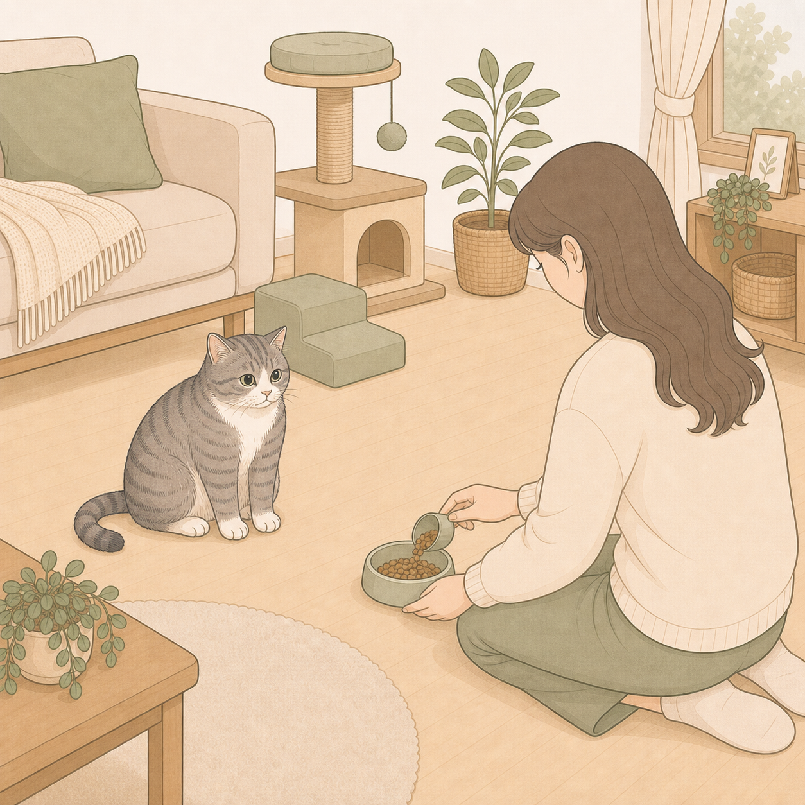
츄르가 둥글어졌다.
나는 귀엽다고 했다.
사진 속 츄르는 더 포근해 보였다.
하지만 캣타워에 오르다 멈추는 날이 늘었다.
귀여움이 몸의 부담을 가리고 있었다.
간식은 사랑의 증거처럼 쉽다.
봉지를 열면 고양이가 오고, 고양이가 오면 사람은 사랑받는 기분이 든다.
하지만 몸은 감정이 아니라 무게로 대답한다.
나는 간식 양을 적고, 놀이 시간을 늘렸다.
츄르는 불만이 있어 보였고, 나도 있었다.
오래 같이 살기 위한 사랑은 가끔 덜 주는 방식으로 온다.
덜 주되 더 자주 놀고, 덜 열되 더 정확히 기록하는 방식으로.
30초 체크
- 간식 양을 실제로 알고 있는가?
- 체중 변화를 기록하는가?
- 놀이량이 줄어 있지는 않은가?
- 급격한 제한을 하려 하지는 않는가?
집사 메모
체중 관리는 급격히 하지 않는다.
식단 조절은 건강 상태를 고려해야 하므로 병원과 상의하는 것이 안전하다.
오늘의 한 문장
간식을 덜 주는 것도 오래 살자는 말일 수 있다.
Part 5. 같이 산다는 것의 거리
25. 합사는 사랑보다 동선이다
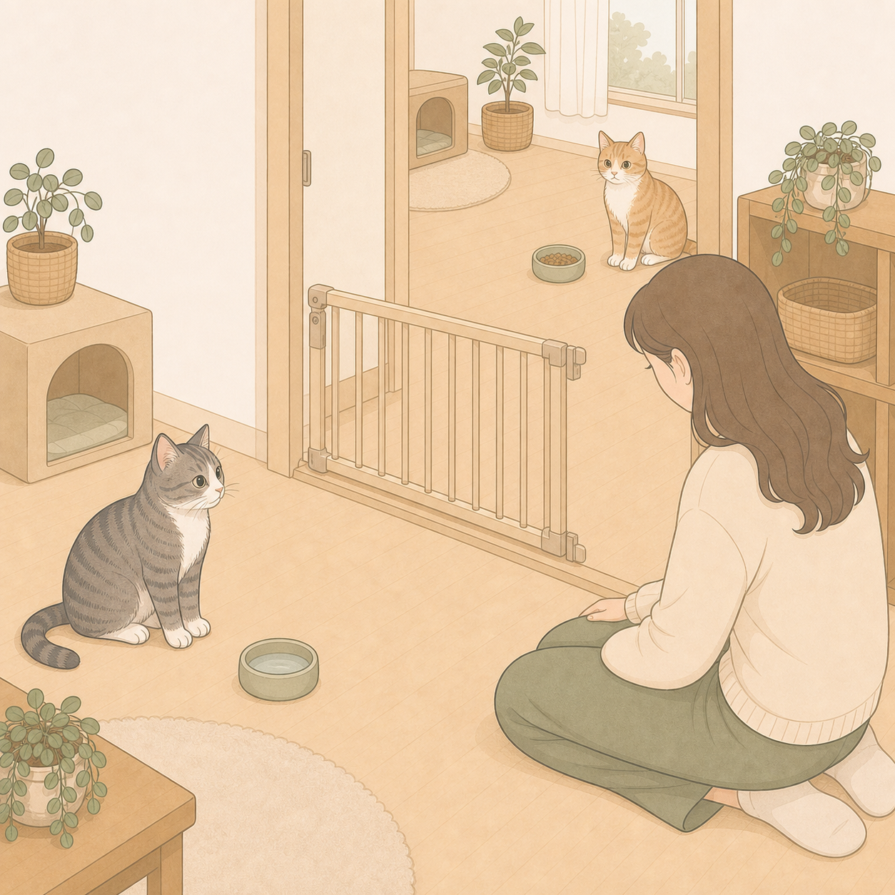
둘째 이야기는 늘 부드럽게 시작된다.
“혼자 있으면 외롭지 않을까?” “친구가 있으면 좋지 않을까?” 그 말에는 사랑이 들어 있다.
하지만 고양이에게 사랑은 사람의 상상과 다른 모양으로 도착할 수 있다.
새 고양이는 친구가 아니라 갑자기 나타난 냄새, 소리, 발자국, 밥그릇 경쟁일 수 있다.
몽이가 임시로 우리 집에 온 날, 나는 츄르에게 바로 보여 주고 싶은 마음을 참았다.
문 하나를 닫았다.
몽이는 작은 방에, 츄르는 원래 생활하던 거실에 있었다.
둘은 서로를 보지 못했지만 냄새는 문틈을 지나갔다.
그게 첫 만남이었다.
처음 며칠은 냄새만 바꿨다.
담요를 바꾸고, 밥을 문 양쪽에 놓았다.
문은 닫혀 있었지만 좋은 일이 근처에서 일어나게 했다.
그다음 문을 아주 조금 열었다.
눈이 마주쳤다.
오래 두지 않았다.
잘 끝나는 순간에서 멈췄다.
사람은 “조금만 더”를 좋아하지만, 합사에서는 그 조금이 실패를 만든다.
중요한 것은 감정이 아니라 동선이었다.
각자 도망갈 길이 있는가. 화장실이 충분한가. 밥과 물을 따로 둘 수 있는가. 높은 자리와 숨을 곳이 있는가. 둘이 같은 방에 있어도 서로를 피할 수 있는가. 사랑은 같이 있으라는 명령이 아니라, 피할 수 있어도 다시 돌아올 수 있는 구조였다.
츄르와 몽이는 금방 친구가 되지 않았다.
하지만 큰 싸움 없이 서로의 존재를 배웠다.
그 정도면 좋은 시작이었다.
사진을 찍을 만한 장면보다 중요한 것은 사진을 찍을 필요가 없을 만큼 평온한 날이었다.
30초 체크
- 새 고양이와 기존 고양이에게 분리 공간이 있는가?
- 화장실, 밥, 물, 숨을 곳을 충분히 나누었는가?
- 만남을 길게 밀어붙이지 않고 잘 끝나는 시점에서 멈췄는가?
- 사람의 기대보다 고양이의 회복 속도를 우선하는가?
집사 메모
합사는 속도와 자원 배치가 핵심이다.
싸움이 반복되거나 식욕, 배변, 은신, 공격성 변화가 커지면 무리한 접촉을 중단하고 이전 단계로 돌아간다.
필요하면 행동 전문가나 수의사에게 상담한다.
오늘의 한 문장
합사는 마음을 붙이는 일이 아니라 길을 겹치지 않게 만드는 일에서 시작한다.
26. 둘째를 들이기 전 첫째에게 묻는 법
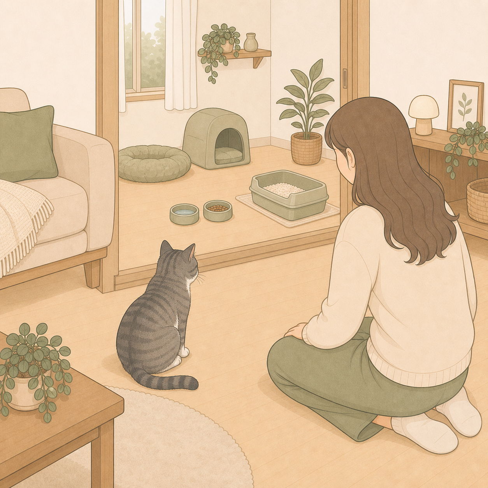
사람은 외로움을 상상한다.
“혼자 심심하지 않을까?” 그 질문은 다정하지만 고양이의 답은 아닐 수 있다.
첫째에게 둘째는 친구가 아니라 생활 전체를 바꾸는 사건일 수 있다.
첫째에게 묻는 법은 말이 아니다.
공간은 충분한가. 화장실은 나눌 수 있는가. 밥자리와 물자리는 떨어뜨릴 수 있는가. 숨을 곳은 여러 개인가. 실패했을 때 분리할 수 있는가. 무엇보다 보호자는 기다릴 수 있는가.
둘째는 첫째에게 주는 선물이 아니라 첫째의 생활을 바꾸는 책임이다.
사람의 외로움보다 고양이의 영토를 먼저 봐야 한다.
30초 체크
- 둘째를 사람의 외로움 기준으로 결정하고 있지 않은가?
- 공간과 자원을 나눌 수 있는가?
- 실패했을 때 분리 관리가 가능한가?
- 첫째의 성향과 스트레스 신호를 알고 있는가?
집사 메모
다묘 가정은 자원 경쟁을 줄이는 설계가 중요하다.
개체 성향에 따라 합사 속도는 크게 다르며, 무리한 접촉은 관계를 악화시킬 수 있다.
오늘의 한 문장
둘째는 선물 이전에 생활 변화다.
27. 아기와 고양이 사이의 규칙
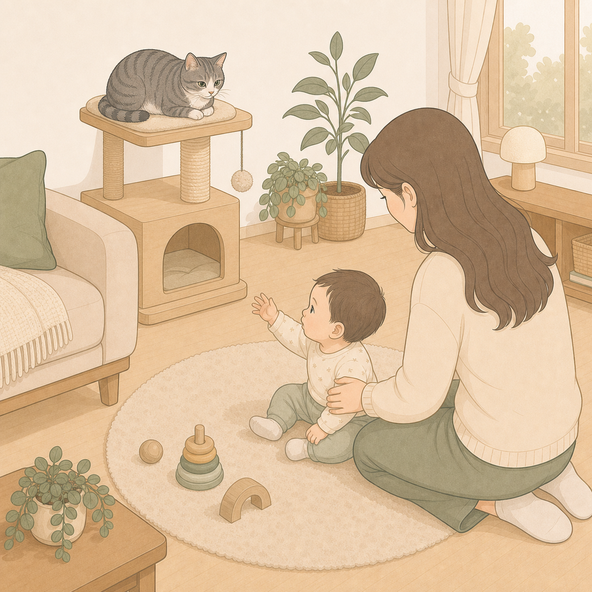
아기가 온 뒤 집의 소리가 바뀌었다.
울음, 작은 발소리, 장난감, 낯선 냄새. 츄르는 높은 곳에 더 자주 올라갔다.
나는 처음엔 츄르가 예민해졌다고 생각했다.
사실은 집이 예민해진 것이었다.
높은 곳은 도망이 아니라 조절이었다.
츄르는 거기서 새 가족을 관찰했다.
아기에게도 규칙이 필요했다.
자는 고양이를 깨우지 않기, 밥 먹는 고양이를 건드리지 않기, 꼬리를 잡지 않기, 싫다는 신호를 보면 멈추기.
가족이 된다는 것은 모두가 만져도 된다는 뜻이 아니다.
사랑하는 사이에도 안전한 거리는 필요하다.
30초 체크
- 고양이가 피할 높은 장소가 있는가?
- 아이에게 고양이 규칙을 알려 주는가?
- 식사와 휴식 공간이 보호되는가?
- 상호작용을 반드시 지켜보고 있는가?
집사 메모
아이와 고양이는 반드시 감독한다.
고양이가 스트레스 신호를 보이면 거리를 확보하고, 아이에게도 반복적으로 규칙을 알려 준다.
오늘의 한 문장
가족이어도 경계는 필요하다.
28. 싸움이 끝난 뒤 사람이 해야 할 일
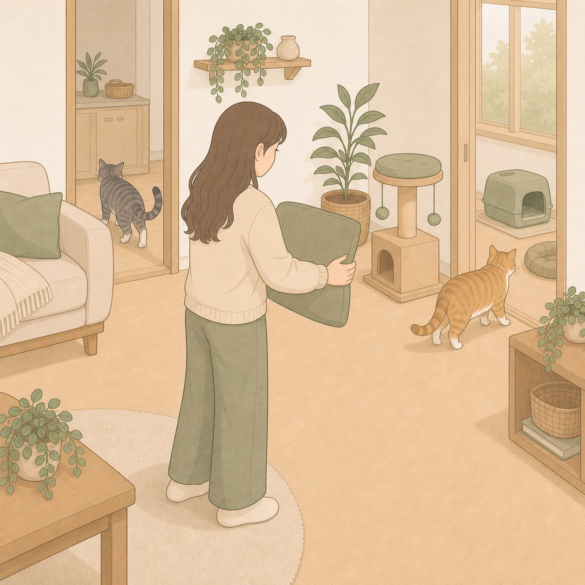
두 고양이가 마주쳤다.
소리는 짧았지만 내 심장은 길게 뛰었다.
본능적으로 손을 넣으려 했다.
말려야 한다고 생각했다.
하지만 손은 해결책이 아니라 다칠 물건이 될 수 있다.
나는 가까이 가지 않고 큰 소리를 줄였다.
시야를 막을 수 있는 쿠션을 들고, 각자 빠질 길을 만들었다.
둘은 떨어졌다.
그 순간 나는 바로 다시 만나게 하고 싶은 충동을 느꼈다.
괜찮아졌는지 확인하고 싶었다.
하지만 싸움이 끝난 뒤에도 몸은 아직 끝나지 않는다.
심장은 빠르고, 냄새는 남아 있고, 긴장은 계속된다.
분리된 공간에서 각자 진정할 시간을 줬다.
밥도 따로, 물도 따로, 화장실도 따로. 다시 만나는 것은 확인이 아니라 다음 단계였다.
서두르면 싸움은 기억으로 굳어진다.
천천히 하면 사건은 지나간 일이 될 수 있다.
싸움 뒤 사람이 해야 할 일은 화해 연출이 아니다.
안전 확인, 상처 확인, 자원 분리, 단계 되돌리기다.
고양이 관계에서 사람의 조급함은 자주 두 번째 싸움을 부른다.
30초 체크
- 싸움 중 손을 넣지 않았는가?
- 시야 차단과 분리 동선을 만들었는가?
- 상처, 절뚝거림, 식욕 변화를 확인했는가?
- 바로 다시 만나게 하지 않았는가?
집사 메모
싸움 후 상처, 통증, 절뚝거림, 식욕 부진, 은신 증가가 있으면 확인과 상담이 필요하다.
반복 싸움은 합사 단계를 되돌리고 자원 배치를 재점검한다.
오늘의 한 문장
싸움 뒤에는 화해보다 진정이 먼저다.
29. 외로움이라는 사람의 오해
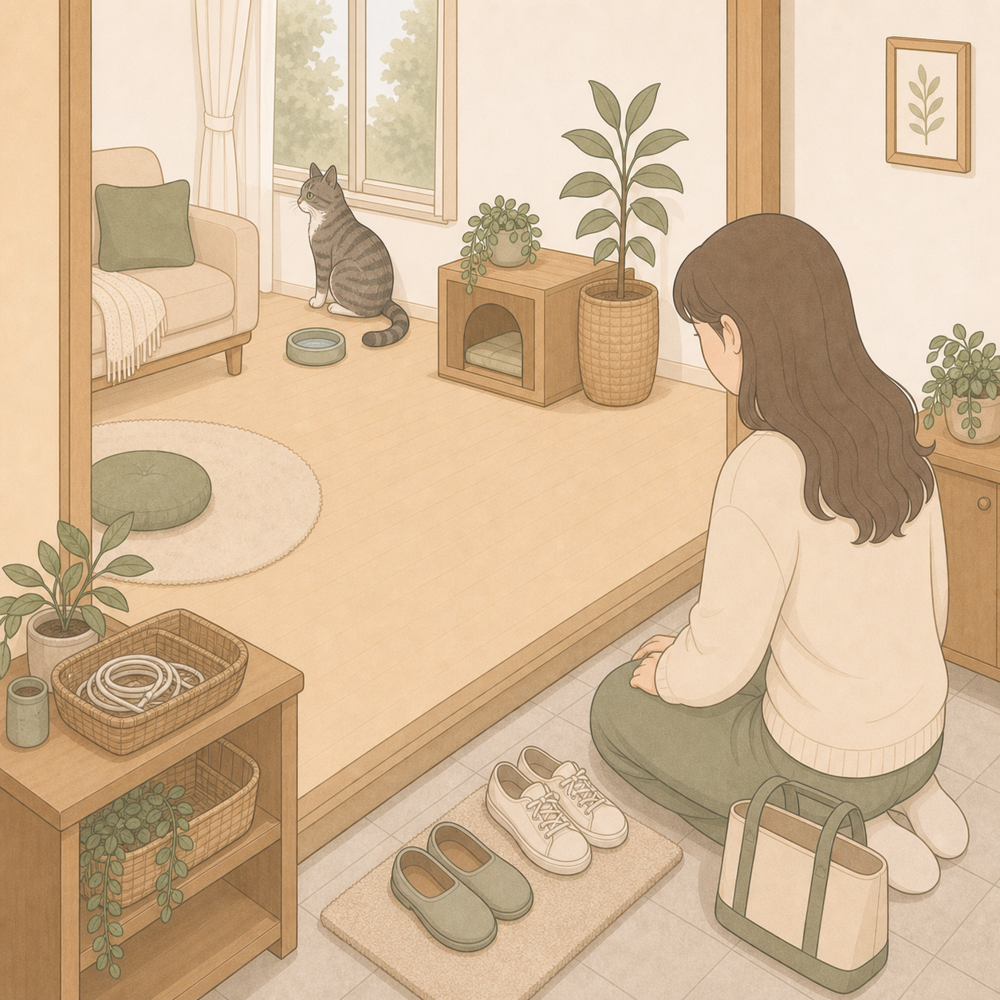
내가 없는 시간 츄르가 외로울 거라고 생각했다.
그래서 집에 오면 크게 부르고, 오래 미안해하고, 바로 안으려 했다.
츄르는 피했다.
카메라를 보니 츄르는 잤고, 물을 마셨고, 창밖을 봤다.
물론 기다리는 시간이 있었을지 모른다.
하지만 하루 전체를 슬픔으로 쓰지는 않았다.
내 죄책감이 츄르의 하루를 전부 설명하지 못했다.
내가 할 일은 미안함을 길게 말하는 것이 아니라, 혼자 있는 시간을 안정적으로 설계하는 것이었다.
물, 화장실, 창문, 위험 물건, 놀이 후 휴식. 고양이에게 필요한 것은 사람의 사과문보다 예측 가능한 환경일 때가 많다.
30초 체크
- 내 감정으로 고양이 상태를 단정하지 않는가?
- 혼자 있는 시간의 환경이 안전한가?
- 퇴근 후 고양이가 먼저 오게 두는가?
- 반복적인 문제 행동이 있다면 기록하는가?
집사 메모
분리 관련 문제가 반복되면 울음, 파괴, 식욕 변화, 배변 실수 등 구체적 행동을 기록한다.
단순 외로움으로만 해석하지 않는다.
오늘의 한 문장
고양이의 하루를 내 죄책감으로 번역하지 않는다.
30. 가족이 늘어날 때 고양이가 잃는 것
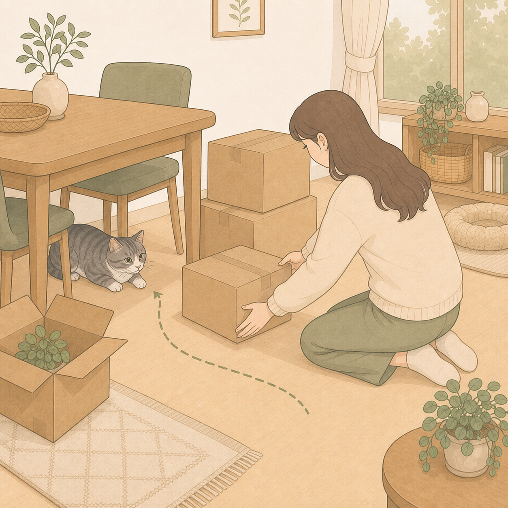
집에 사람이 늘면 기쁨도 늘지만, 고양이에게는 예측 불가능도 늘어난다.
손님, 아이, 새 가구, 새 냄새. 츄르는 식탁 밑에 더 오래 있었다.
나는 츄르가 예민해졌다고 생각했다.
하지만 바뀐 것은 츄르만이 아니었다.
집이 바뀌었다.
소리가 많아지고, 길이 막히고, 쉬던 자리에 낯선 물건이 놓였다.
고양이가 잃은 것을 보지 못하면, 새로 얻은 기쁨도 불편이 된다.
가족 변화에는 고양이의 자리도 다시 설계해야 한다.
숨을 곳, 조용한 시간, 만지지 않는 규칙. 고양이가 잃는 것을 줄여야 새로 생긴 것을 받아들일 수 있다.
30초 체크
- 가족 변화 뒤 고양이 루틴이 깨졌는가?
- 조용한 전용 공간이 있는가?
- 손님에게 고양이 규칙을 안내하는가?
- 식욕, 은신, 배변 변화가 이어지는가?
집사 메모
환경 변화 뒤 스트레스 신호가 길어지면 생활 구조를 조정한다.
식욕 부진, 배변 문제, 공격성 변화가 반복되면 상담한다.
오늘의 한 문장
가족이 늘수록 고양이의 조용한 자리는 더 필요하다.
Part 6. 오래 같이 살기 위한 책임
31. 실종을 상상하기 전에 할 일
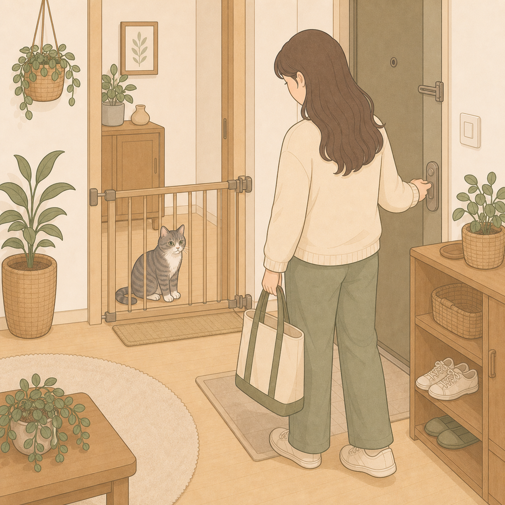
현관문이 열린 순간 츄르가 고개를 들었다.
그 짧은 순간에 나는 모든 나쁜 상상을 했다.
상상은 빠르고 무섭다.
하지만 예방은 더 구체적이어야 한다.
현관 앞 중문, 방묘문, 가족의 문 여닫는 규칙, 최근 사진, 식별 정보. 실종은 마음으로만 걱정할 일이 아니라 구조로 막아야 할 일이다.
불안이 도움이 되려면 물건과 습관으로 바뀌어야 한다.
그 뒤 나는 문 앞에서 가방보다 츄르 위치를 먼저 봤다.
문이 열리는 시간은 짧지만, 준비는 평소에 해야 한다.
30초 체크
- 현관 탈출 방지 구조가 있는가?
- 최근 사진과 식별 정보가 준비되어 있는가?
- 가족 모두 문 여닫는 규칙을 아는가?
- 손님 방문 때 고양이 위치를 확인하는가?
집사 메모
실종 예방은 일상 습관이다.
사고 뒤 대응보다 사고 전 구조가 중요하다.
지역 상황에 맞는 등록과 식별 방법도 확인한다.
오늘의 한 문장
불안은 구조로 바꿔야 도움이 된다.
32. 길고양이를 본 날의 순서
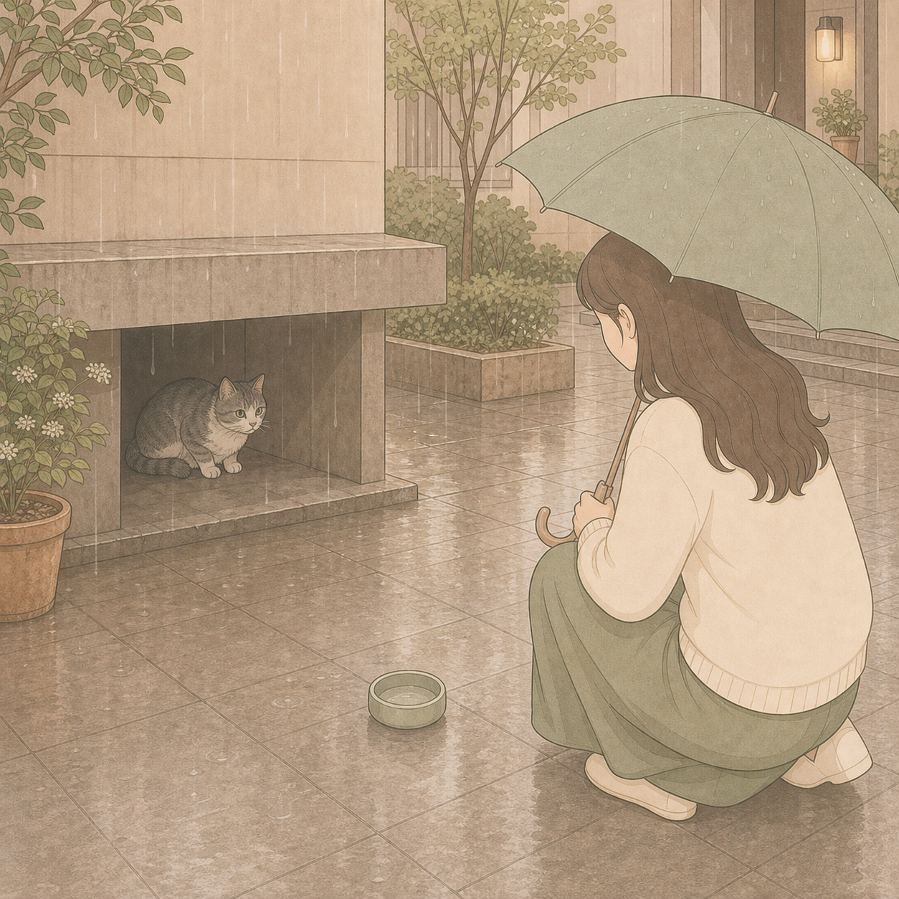
비 오는 날 주차장 밑에 고양이가 있었다.
나는 바로 데려오고 싶었다.
하지만 마음이 빠를수록 순서가 필요했다.
즉시 위험한 위치인지, 다친 곳이 보이는지, 새끼라면 어미가 있는지, 주변에 돌보는 사람이 있는지 확인해야 했다.
구조는 선한 마음만으로 충분하지 않다.
잘못된 포획은 더 큰 위험이 될 수 있다.
고양이를 돕는 일은 내가 주인공이 되는 일이 아니다.
고양이에게 가장 덜 위험한 순서를 찾는 일이다.
30초 체크
- 즉시 위험 상황인가?
- 다친 곳이나 질병 신호가 보이는가?
- 새끼라면 어미 여부를 확인했는가?
- 지역 구조 단체나 병원과 연결할 수 있는가?
집사 메모
길고양이 구조는 상황 판단이 중요하다.
무리한 포획은 위험할 수 있으므로 지역 구조 경험이 있는 단체나 전문가 도움을 받는다.
오늘의 한 문장
돕고 싶을수록 순서를 지킨다.
33. 위험한 물건은 귀엽지 않다
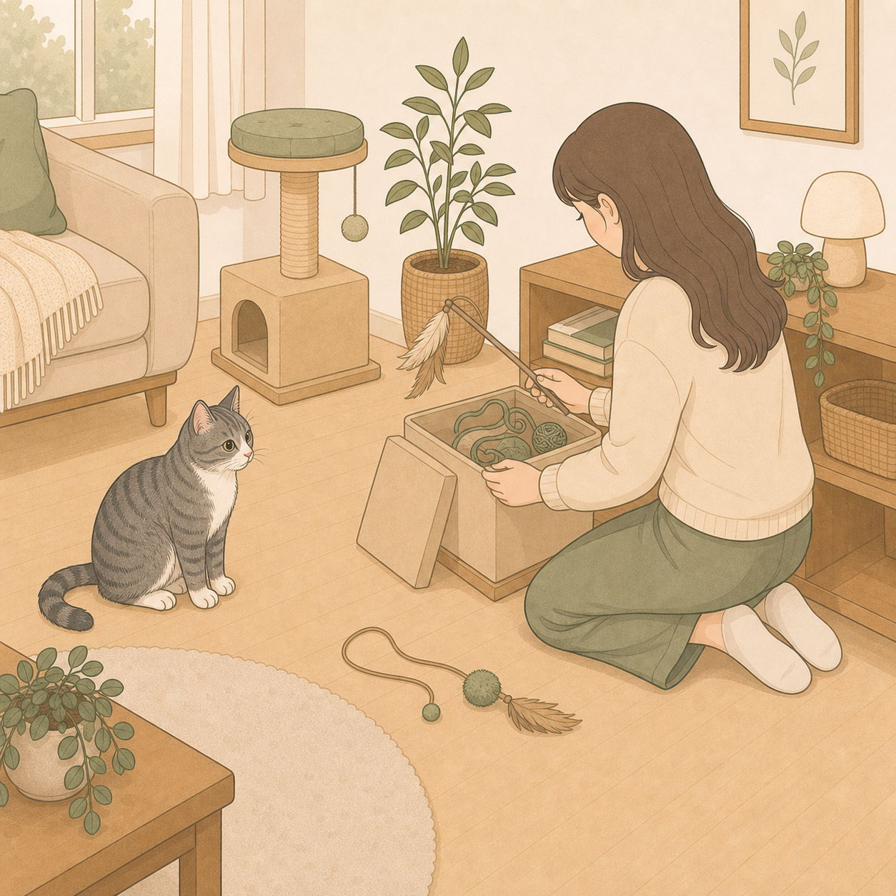
츄르는 리본을 좋아했다.
나는 귀엽다고 흔들었다.
어느 날 리본 끝이 짧아진 것을 보고 심장이 내려앉았다.
장난감은 놀 때만 장난감이었다.
사람이 보지 않을 때는 위험한 물건이 될 수 있었다.
끈, 비닐, 고무줄, 작은 부품. 고양이는 빠르게 잡고, 물고, 삼킬 수 있다.
사람에게는 사소한 물건이지만 고양이에게는 병원으로 이어질 수 있는 위험이다.
그 뒤 장난감은 닫힌 상자에 넣었다.
놀이는 같이 하고, 끝나면 치웠다.
귀여운 장면보다 안전한 마무리가 더 중요했다.
30초 체크
- 끈, 리본, 고무줄을 방치하지 않는가?
- 삼킬 수 있는 작은 부품이 있는가?
- 놀이 후 장난감을 치우는가?
- 이물 섭취 의심 신호를 알고 있는가?
집사 메모
이물 섭취가 의심되면 지켜보기보다 병원에 상담한다.
구토, 식욕 부진, 무기력, 배변 이상은 위험 신호가 될 수 있다.
오늘의 한 문장
장난감은 사람이 함께 있을 때만 안전하다.
34. 노묘의 느린 대답
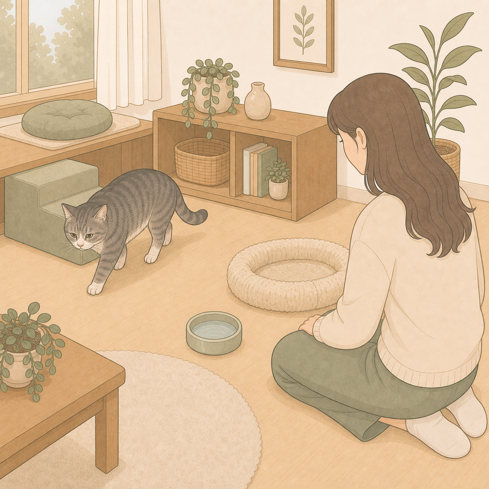
언젠가 츄르도 느려질 것이다.
높은 곳에 덜 오르고, 더 오래 자고, 이름을 불러도 천천히 눈만 뜰 것이다.
상상만으로도 마음이 조용해진다.
하지만 느려짐을 모두 나이 탓으로 넘기면 중요한 신호를 놓칠 수 있다.
나이 든 고양이에게 필요한 것은 불안한 감시가 아니라 정확한 비교다.
예전에는 한 번에 오르던 곳을 망설이는지, 식욕이 줄었는지, 물을 더 마시는지, 화장실 실수가 생겼는지, 몸무게가 달라졌는지. 느린 대답에도 이유가 있을 수 있다.
나는 츄르의 좋은 날 기준을 적어 보기로 했다.
잘 먹는 날, 창가에 올라가는 날, 화장실을 편하게 쓰는 날, 손등에 이마를 대는 날. 좋은 날의 기준을 알아야 나쁜 날도 더 정확히 볼 수 있다.
막연히 “늙었으니까”라고 말하는 대신 “지난달보다 점프를 덜 한다”고 말할 수 있어야 한다.
오래 같이 산다는 것은 속도가 줄어드는 시간을 함께 배우는 일이다.
다만 그 느려짐 속에 통증이 숨어 있지 않은지, 불편이 방치되고 있지 않은지 묻는 일도 사랑이다.
30초 체크
- 활동량, 식욕, 체중 변화가 있는가?
- 점프, 계단, 화장실 이용을 힘들어하는가?
- 물과 소변 변화가 있는가?
- 좋은 날의 기준을 알고 있는가?
집사 메모
노령 고양이는 정기 검진과 생활 환경 조정이 중요하다.
통증, 신장, 치아, 관절, 체중 변화 등은 나이 탓으로만 넘기지 않는다.
높은 곳을 낮추고, 미끄럼을 줄이고, 화장실 접근성을 높이는 작은 조정이 도움이 될 수 있다.
오늘의 한 문장
느려진 고양이에게도 새 기록이 필요하다.
35. 마지막을 준비한다는 말
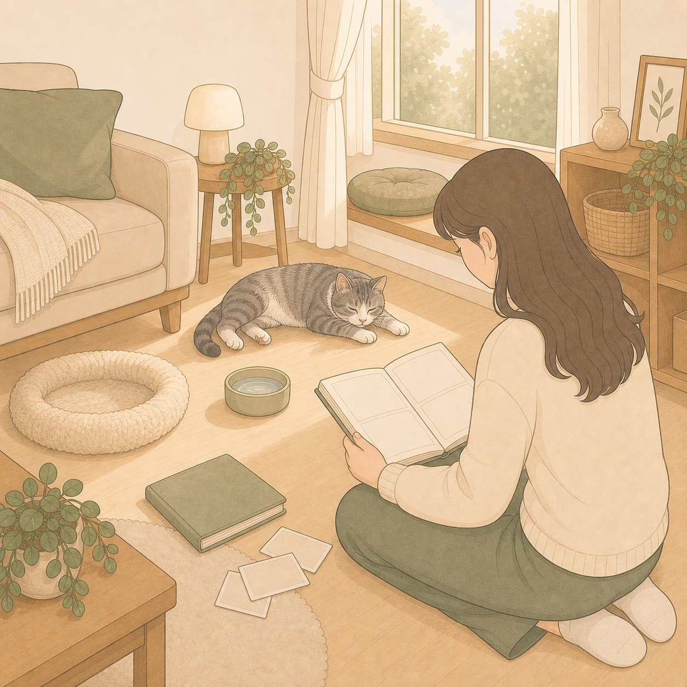
마지막을 생각하는 일은 잔인해 보인다.
하지만 생각하지 않는다고 시간이 멈추지는 않는다.
나는 츄르의 좋은 날을 기록하기로 했다.
잘 먹는 날, 햇빛을 보는 날, 화장실을 편히 쓰는 날, 손등에 이마를 대는 날. 좋은 날의 기준을 알아야 나쁜 날도 더 정확히 볼 수 있다.
마지막을 준비한다는 말은 포기가 아니라 고통을 혼자 두지 않겠다는 약속일 수 있다.
그 약속은 보호자 혼자 감당할 것이 아니다.
어려운 판단은 수의사와 상의해야 한다.
사랑은 끝까지 혼자 버티는 일이 아니라, 필요한 도움을 함께 부르는 일이기도 하다.
30초 체크
- 내 고양이의 좋은 날 기준을 알고 있는가?
- 통증, 식욕, 배변, 움직임 변화를 기록하는가?
- 어려운 결정은 전문가와 상의할 준비가 되어 있는가?
- 보호자 혼자 버티고 있지는 않은가?
집사 메모
말기 돌봄과 안락사 판단은 보호자 혼자 감당할 문제가 아니다.
고양이의 고통, 삶의 질, 치료 가능성을 수의사와 충분히 상담한다.
오늘의 한 문장
끝을 생각하는 일도 사랑의 일부일 수 있다.
36. 모르면 묻는 용기
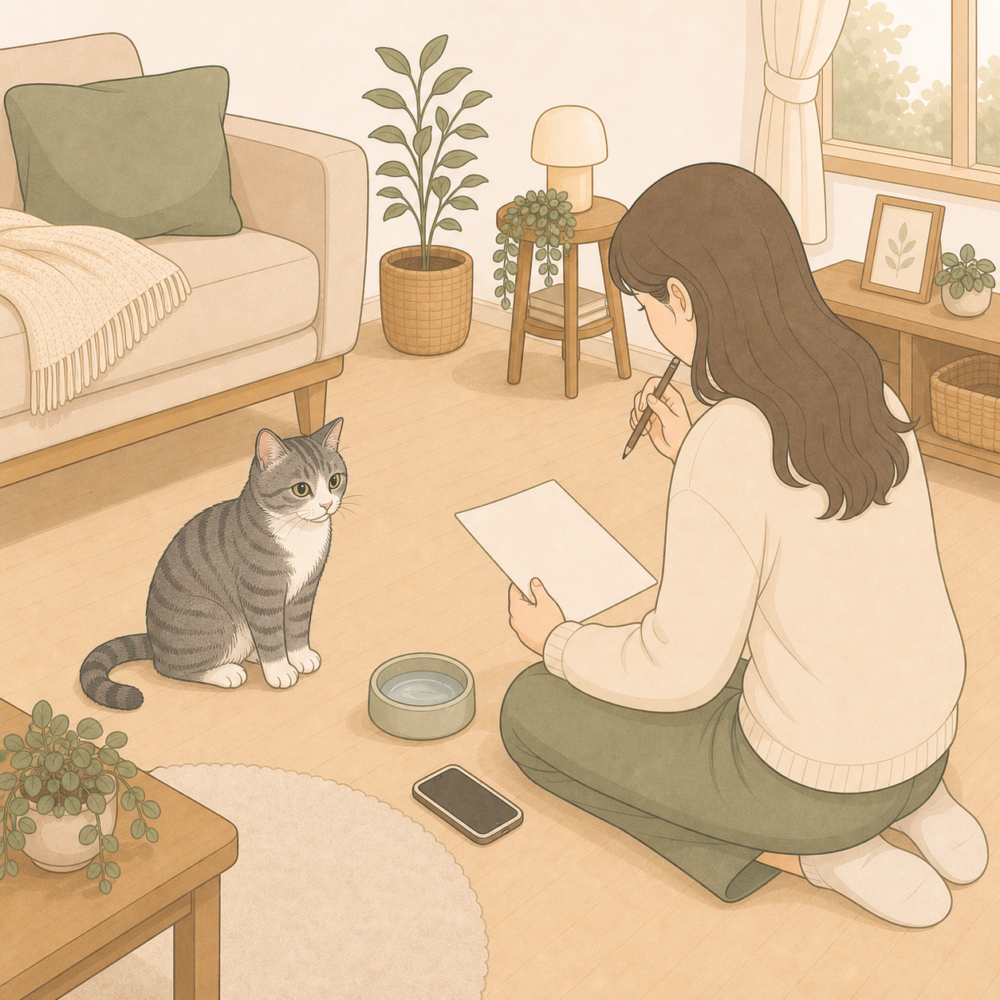
나는 자주 몰랐다.
검색했고, 더 헷갈렸고, 괜찮겠지 하다가 다시 걱정했다.
정보가 많아질수록 판단은 더 흐려질 때가 있었다.
어느 날부터 질문을 적었다.
지금 당장 위험한가. 오늘 관찰할 수 있는가. 병원에 물어볼 정보는 무엇인가. 모른다는 말은 부끄러운 말이 아니라 다음 행동의 시작이었다.
좋은 집사는 모든 걸 아는 사람이 아니다.
모를 때 안전한 쪽으로 움직이는 사람이다.
고양이에게 필요한 것은 보호자의 자존심이 아니라 다음 행동이다.
30초 체크
- 모르는 것을 미루고 있지는 않은가?
- 질문을 구체적으로 적었는가?
- 위험 신호라면 바로 상담하는가?
- 온라인 정보만으로 결론 내리지 않는가?
집사 메모
온라인 정보는 참고 자료일 뿐이다.
진단과 치료 결정은 고양이 상태를 직접 평가할 수 있는 전문가와 상의한다.
오늘의 한 문장
모르면 묻는 것이 돌봄을 망치지 않는 방법이다.
Part 7. 고양이라는 종을 더 정확히 보기
37. 묘종백과를 읽는 법
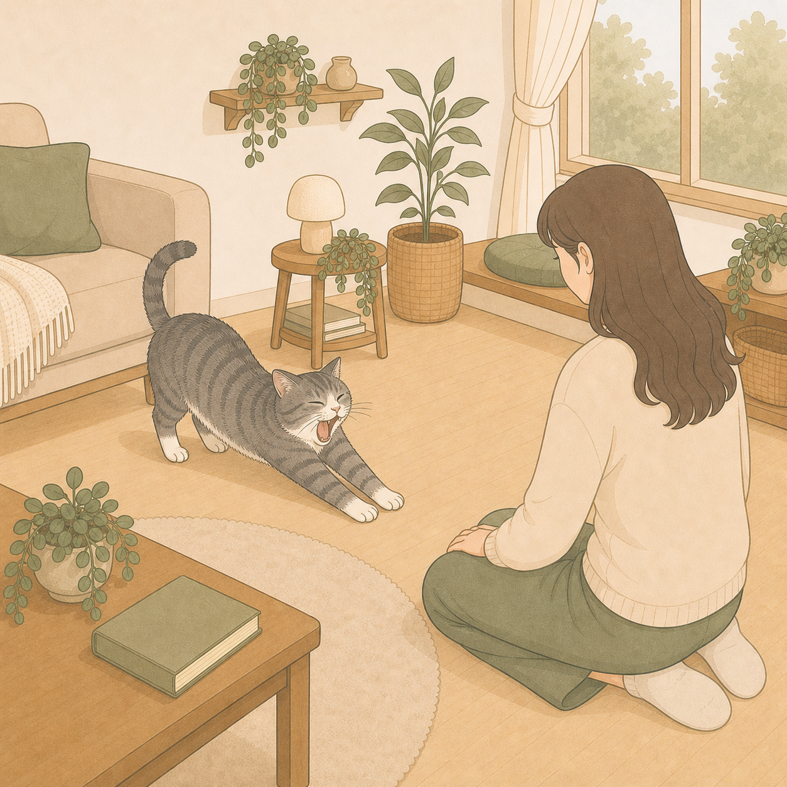
나는 품종 설명을 재미로 읽었다.
털, 눈, 체형, 성격. 츄르는 품종표 밖에서 하품했다.
그 모습을 보고 알았다.
품종 정보는 힌트지만, 한 고양이를 전부 설명하지 않는다.
품종은 건강 주의나 생활 관리의 시작점이 될 수 있다.
하지만 오늘의 식욕, 화장실, 놀이 반응은 지금 내 앞의 고양이가 말하는 정보다.
백과는 시작이고, 관찰은 매일의 본문이다.
나는 츄르를 품종으로만 설명하지 않기로 했다.
창가 물을 좋아하고, 손바닥보다 손등을 믿고, 밤에는 짧게 뛰는 고양이. 그게 같이 사는 데 더 필요한 설명이었다.
30초 체크
- 품종 설명으로 성격을 단정하지 않는가?
- 품종별 건강 주의만큼 현재 생활도 보는가?
- 내 고양이의 실제 반응을 기록하는가?
- 외모보다 생활 신호를 먼저 보는가?
집사 메모
품종별 질환 경향은 참고할 수 있지만 개체 상태와 검진이 중요하다.
품종 정보는 관찰을 보조해야지 대체해서는 안 된다.
오늘의 한 문장
품종은 힌트이고 고양이는 본문이다.
38. 예쁜 외모 뒤의 유전 이야기
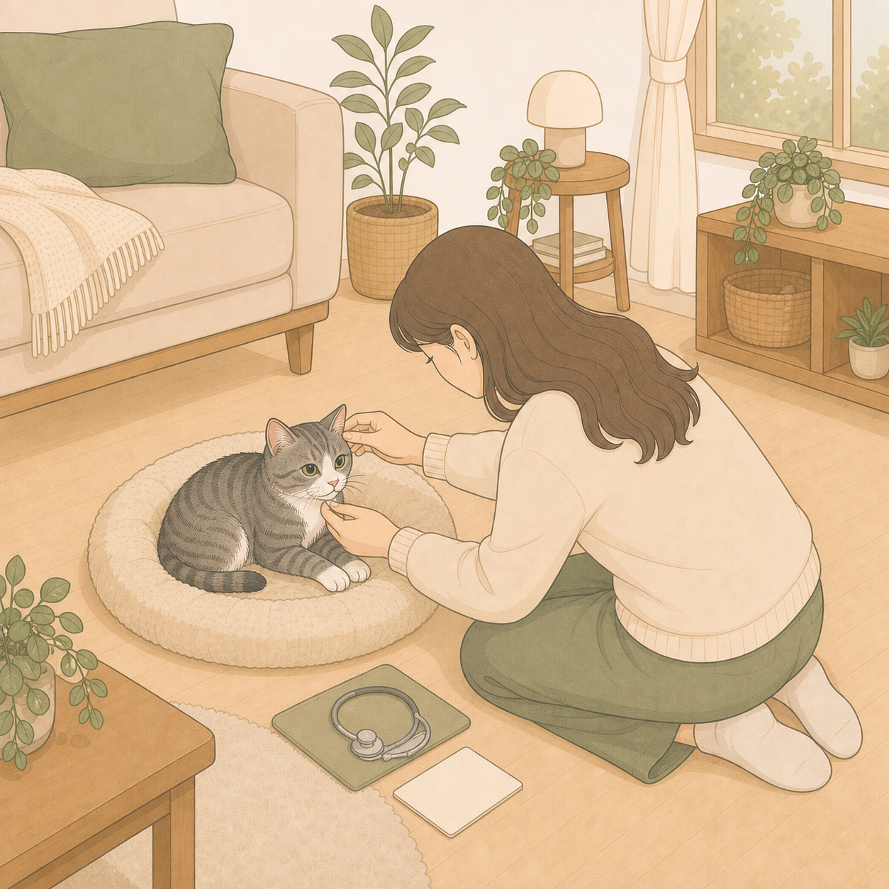
예쁜 귀, 짧은 다리, 납작한 얼굴. 사람은 특징을 좋아한다.
하지만 특징은 때로 몸의 부담과 연결된다.
나는 외모를 좋아하는 마음을 부정하지 않기로 했다.
대신 그 마음 뒤에 책임을 붙이기로 했다.
어떤 구조가 어떤 불편을 만들 수 있는지, 어떤 검진과 생활 관리가 필요한지 묻는 책임이다.
예쁨은 끝이 아니라 질문의 시작이어야 한다.
귀엽다는 감탄 뒤에 불편하지 않은지 보는 눈이 따라와야 한다.
30초 체크
- 외모 특징과 건강 주의를 함께 알고 있는가?
- 불편 신호를 귀여움으로 넘기지 않는가?
- 검진과 환경 조정을 고려하는가?
- 품종 정보가 책임으로 이어지는가?
집사 메모
품종 관련 건강 이슈는 일반화만으로 판단하지 않는다.
개체별 상태를 병원에서 확인하고 생활 환경을 조정한다.
오늘의 한 문장
예쁘다고 끝내지 말고 불편하지 않은지 묻는다.
39. 털과 피부가 보내는 힌트
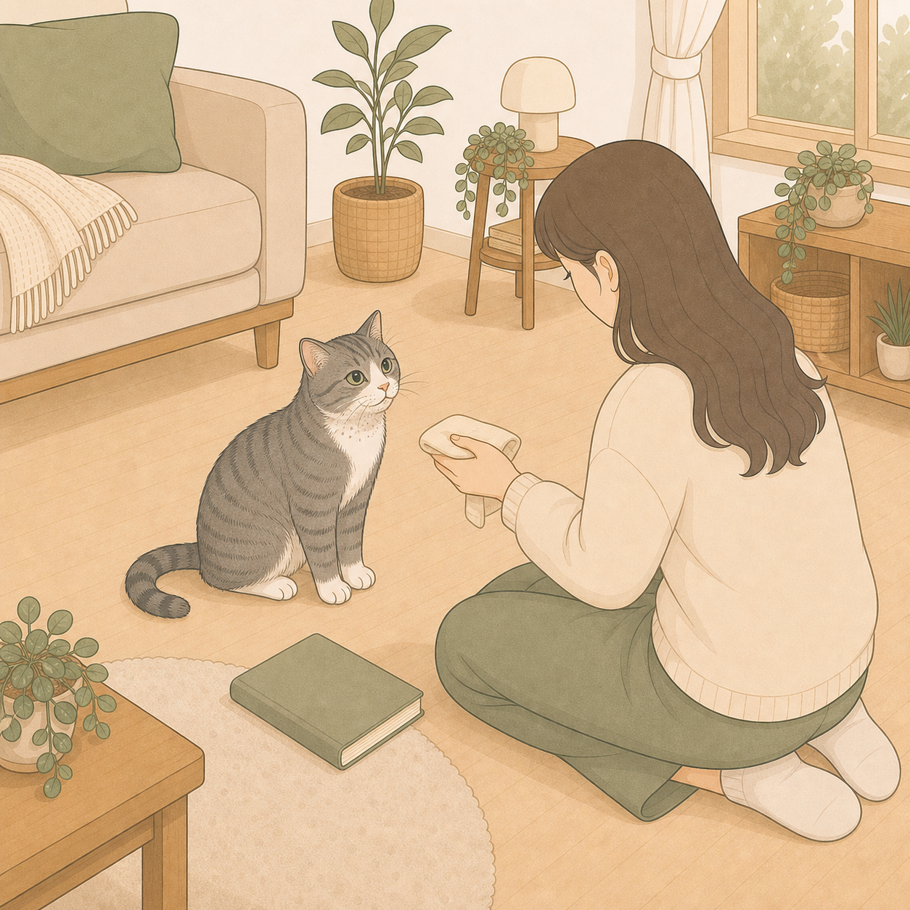
츄르의 턱 아래가 거뭇해졌다.
처음엔 먼지인 줄 알았다.
닦아도 다시 생겼다.
작은 변화였지만 반복되었다.
피부와 털은 조용하지만 부지런히 말한다.
그릇 재질, 위생, 스트레스, 알레르기, 통증. 원인을 하나로 찍을 수 없을 때일수록 기록이 필요하다.
나는 사진을 찍고 날짜를 적었다.
닦은 방식도 적었다.
병원에 갈 때 내 말은 조금 더 정확해졌다.
“턱이 지저분해요”보다 “일주일째 반복되고, 닦아도 다시 생깁니다”가 더 도움이 된다.
30초 체크
- 털 빠짐, 비듬, 상처, 턱 오염이 반복되는가?
- 그릇과 생활 환경을 확인했는가?
- 사진으로 변화를 기록했는가?
- 가려움이나 통증 반응이 있는가?
집사 메모
피부 문제는 원인이 다양하다.
반복되거나 악화되면 임의 처치보다 상담이 안전하다.
오늘의 한 문장
피부는 작은 변화로 오래 말한다.
40. 작은 고양이와 작은 오해
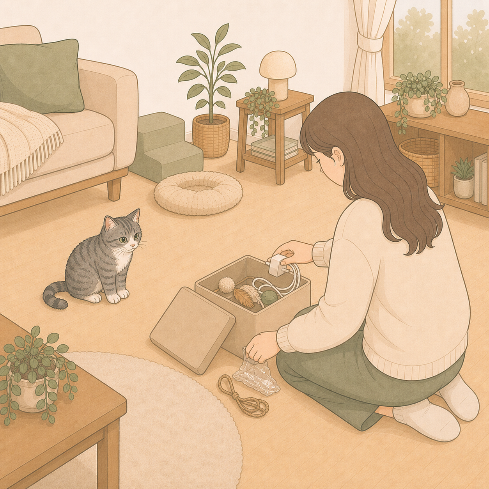
새끼 고양이는 작아서 모든 것이 귀엽다.
그래서 더 위험하다.
높은 곳, 작은 틈, 삼킬 수 있는 물건, 너무 긴 놀이. 작음은 보호자의 방심을 부를 수 있다.
어린 츄르의 사진을 보면 나는 웃는다.
하지만 사진 밖에는 자주 먹이고, 자주 확인하고, 자주 멈추던 시간이 있었다.
작은 고양이는 작은 장난감이 아니라 빠르게 변하는 몸이다.
귀여움만큼 관리가 필요하다.
밥을 먹는지, 배변이 어떤지, 몸이 차갑지는 않은지, 너무 오래 놀지는 않았는지. 작다는 것은 더 자주 봐야 한다는 뜻이다.
30초 체크
- 작은 틈과 높은 낙하 위험을 막았는가?
- 식사와 배변을 자주 확인하는가?
- 놀이가 과하지 않은가?
- 무기력이나 식욕 부진이 있는가?
집사 메모
새끼 고양이는 컨디션 변화가 빠를 수 있다.
식욕 부진, 설사, 무기력, 체온 저하가 의심되면 빠르게 상담한다.
오늘의 한 문장
작다는 것은 더 자주 봐야 한다는 뜻이다.
41. 품종보다 먼저 보는 생활
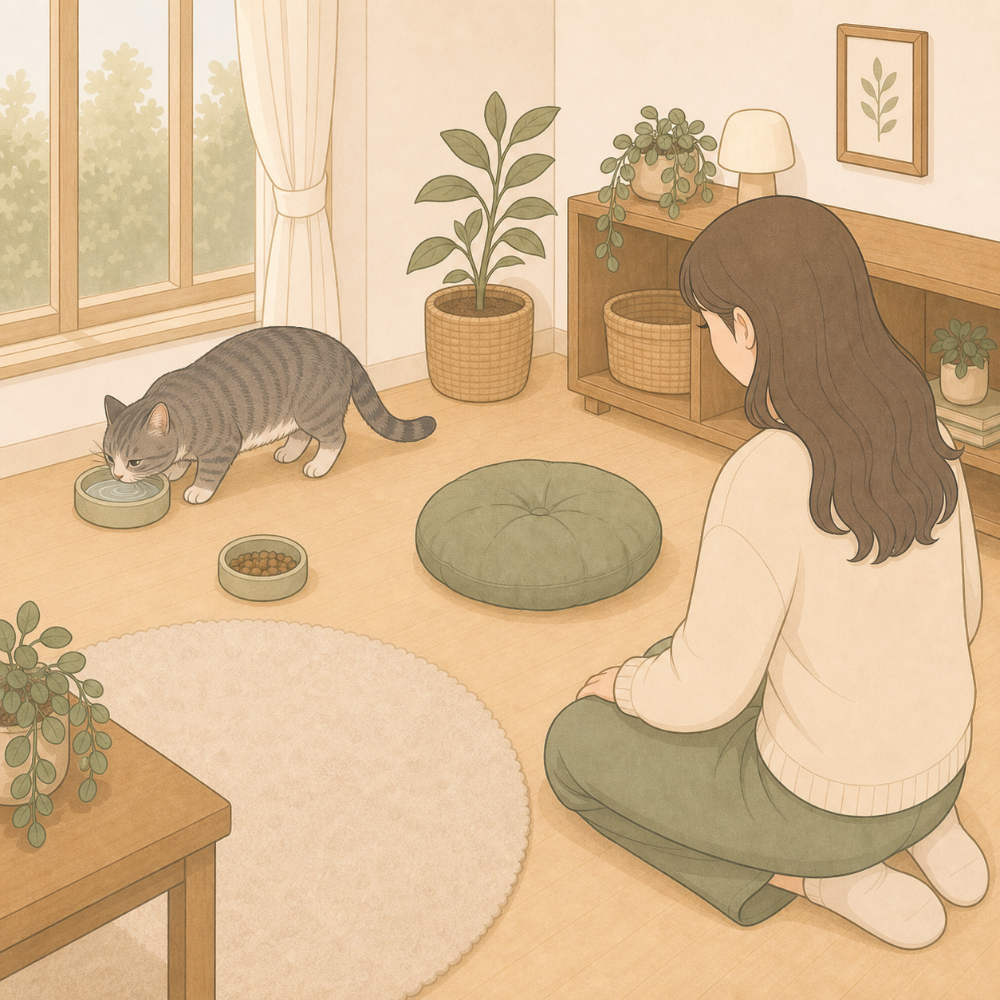
츄르가 어떤 품종인지 묻는 사람은 많았다.
츄르가 어느 자리를 좋아하는지 묻는 사람은 적었다.
하지만 같이 사는 데 더 필요한 답은 대개 두 번째 질문에 있다.
어디서 자는지, 무엇을 무서워하는지, 어떤 그릇을 고르는지, 언제 화장실에 가는지. 고양이의 생활은 매일 갱신되는 설명서다.
품종은 바뀌지 않지만 생활은 계속 말한다.
나는 츄르를 설명할 때 이렇게 말하기로 했다.
창가 물을 좋아하고, 손등을 믿고, 밤에는 짧게 뛰는 고양이. 그 설명이 우리 집에서는 가장 정확했다.
30초 체크
- 내 고양이를 품종 말고 생활로 설명할 수 있는가?
- 좋아하는 자리와 싫어하는 상황을 아는가?
- 매일 반복되는 리듬을 보고 있는가?
- 품종 정보가 생활 관찰을 가리고 있지 않은가?
집사 메모
품종 정보는 유용하지만 생활 관찰을 대체하지 않는다.
돌봄은 개체의 실제 반응에 맞춘다.
오늘의 한 문장
같이 사는 데 필요한 답은 대개 집 안에 있다.
42. 오늘도 츄르는 나를 훈련시킨다
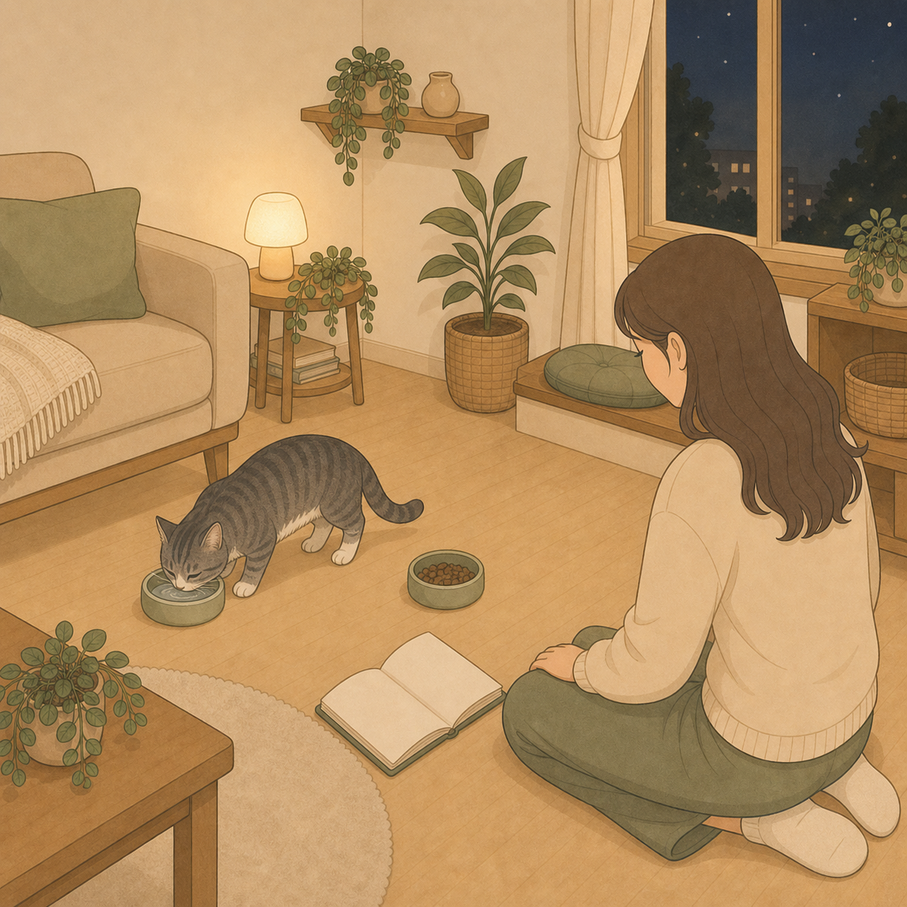
츄르는 이제 소파 밑에 거의 들어가지 않는다.
하지만 가끔 들어간다.
나는 예전처럼 걱정부터 하지 않는다.
오늘의 소리, 냄새, 손님, 청소기, 내 속도를 떠올린다.
츄르는 나를 좋은 사람으로 만든 것이 아니다.
더 관찰하는 사람으로 만들었다.
손을 멈출 줄 아는 사람, 물그릇을 씻는 사람, 걱정보다 날짜를 적는 사람, 모르면 묻는 사람.
오늘 밤 츄르는 창가에서 물을 마신다.
나는 그 소리를 듣는다.
한때 나는 고양이를 잘 키우는 사람이 되고 싶었다.
지금은 조금 다르게 생각한다.
나는 츄르가 나를 매일 조금씩 고쳐 쓸 시간을 주고 싶다.
30초 체크
- 오늘 새로 본 신호가 하나 있는가?
- 혼내기 전에 환경과 몸 상태를 함께 보았는가?
- 내일 바꿀 작은 행동 하나는 무엇인가?
- 모르면 물을 준비가 되어 있는가?
집사 메모
고양이 돌봄은 완벽한 지식보다 꾸준한 관찰에 가깝다.
반복 변화는 기록하고, 위험 신호는 미루지 않는다.
오늘의 한 문장
고양이를 키운다는 것은 매일 조금 더 정확한 사람이 되는 일이다.